Fischer esterification—the acid-catalyzed condensation of a carboxylic acid with an alcohol—is the primary route to the fruity esters that define mature whiskey character. Ethyl acetate, ethyl hexanoate, ethyl octanoate, and ethyl decanoate all form by this mechanism[1].
The problem is thermodynamic and kinetic. At 20°C, Keq ≈ 4.0 for simple ethyl esters, but the uncatalyzed rate is glacial: the proton donation from acetic acid alone (pKa 4.76) provides insufficient catalysis. In barrel aging, traces of wood-derived ellagitannin acids provide weak acid catalysis, and the reaction creeps toward equilibrium over 1–3 years[2]. Le Chatelier offers a second lever: in a sealed barrel, water is a co-product that cannot escape, so equilibrium is reached well below stoichiometric conversion. Crucially, in dilute spirit (~40% ABV), the large molar excess of water (19.4 M vs. 0.008 M total acids) pushes the equilibrium conversion to only ~70%—far below the naïve K/(1+K) = 80% often cited.
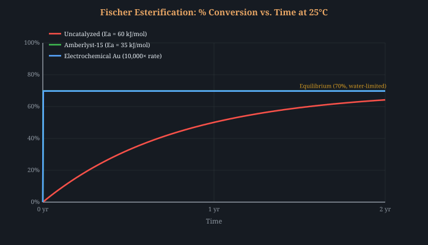
Heterogeneous acid catalysts can accelerate Fischer esterification by orders of magnitude while remaining physically separable from the product—a crucial advantage over homogeneous mineral acids (H2SO4) that would contaminate the spirit.
SBA-15-PrSO3H (propylsulfonic-acid-functionalized mesoporous silica) is the standout candidate. Its ordered mesopore structure (6–10 nm pores) allows free diffusion of organic acid and ethanol molecules to internal sulfonic acid sites. Crucially, SBA-15-PrSO3H retains catalytic activity in the presence of water—a feature most zeolites and acidic clays lack—because the hydrophobic propyl tether shields the acid site from complete hydration[3]. Published conversions for acetic acid + ethanol reach 85–95% in 2–4 hours at 60°C[4].
Amberlyst-15 and Dowex 50WX8 are macroreticular sulfonic acid ion-exchange resins already cleared by FDA under 21 CFR 173.25 for food-contact processing[5]. Their catalytic activity for esterification is well-documented[6]. A packed bed of Amberlyst-15 beads through which new-make spirit is recirculated at 40–60°C could compress years of ester formation into hours. The catalyst stays in the column; only spirit exits.
Reactive distillation combines chemical reaction and separation in a single column. Water, the esterification co-product (bp 100°C), is continuously removed as it forms, while ethyl esters (bp 77–170°C depending on chain length) are collected. By stripping water from the reaction zone, equilibrium is never reached—Le Chatelier drives conversion to >96% in as little as 20 minutes in industrial reactive distillation columns[7].
For a home distiller, the principle is simpler: run the spirit through a reflux column with a small bed of acidic catalyst (Amberlyst-15 beads in the column packing), and the simultaneous distillation removes water. The ester-enriched distillate emerges already converted.
Zhang et al. demonstrated that PEF treatment of wine at 6–40 kV/cm reduced the activation energy for catechin/epicatechin condensation from 41.59 to 28.98 kJ/mol—a 30% reduction[8]. While this study targeted polyphenol polymerization rather than Fischer esterification, the mechanism—transient ionization and polarization of reactant molecules increasing effective collision rates—is general. PEF-treated Grenache wines showed tannin polymerization profiles consistent with naturally aged wines after only 3 days of treatment[8].
Update: PEF does accelerate ester formation. Lin, Zeng et al.[78] demonstrated PEF-enhanced Fischer esterification at room temperature without catalyst. At 20 kV/cm (1 kHz, 30 μs pulses, 18.9 ms total pulse time), ethyl acetate yield increased 1.8× at 13.3 kV/cm. The activation energy for the ethanol–propionic acid system dropped from 77.05 to 62.85 kJ/mol—an 18.4% reduction. The relationship between field strength E and ΔEa is nearly linear: ΔEa = 0.849E − 0.515 (R² = 0.975). For the lactic acid system, the reduction was even more dramatic: from 43.4 to 25.1 kJ/mol (42.3% reduction) at 20 kV/cm[79]. Mechanism: PEF transiently polarizes reactant molecules, stabilizing the protonated carbonyl transition state and increasing effective collision rates.
Wang et al. demonstrated that a gold electrode surface at applied potential directly catalyzes Fischer esterification in distilled spirit by stabilizing a carbocation intermediate from the carboxylic acid. The Au surface reduces the carbocation charge from ~0.7 eV to ~0.1 eV, dramatically lowering the activation barrier[37]. Results after just 20 minutes of treatment:
Separately, Xiong et al. showed electrochemical oxidation of spirit at 0.8V produced flavor profiles indistinguishable from 1-year natural aging by electronic tongue PCA analysis—in 20 minutes. The alcohol consumption rate at 0.8V was ~4×10–4 mg/mL/min versus <5×10–8 mg/mL/min for natural aging—an acceleration factor of approximately 10,000×[38].
Dai et al. took this further with Co3O4 nanosheets, achieving 98% Faradaic efficiency for the 4-electron oxidative pathway: ethanol → acetaldehyde → hemiacetal → ethyl acetate[39]. This is exactly the cascade that occurs during barrel aging, compressed from years to hours. Gold is food-safe (E175), and Co3O4 electrodes are used in water treatment.
Welter et al. demonstrated that TiO2 (anatase) under UVA light drives Fischer esterification at ambient temperature—bypassing the ~60–75 kJ/mol activation energy by generating reactive surface intermediates via photon-induced electron-hole pairs. They achieved 98% conversion of oleic acid to methyl oleate at 55°C, and 96% at 35°C with optimized conditions (3 hours UV, 4 wt% catalyst). The catalyst retained >87% activity after 5 cycles[36].
Critical caveat: The Welter results used neat oleic acid + methanol (no water). In dilute aqueous-ethanol systems like spirits (40% ABV), TiO2 photocatalysis predominantly produces acetaldehyde from ethanol oxidation (k(•OH + ethanol) = 1.9×109 M−1s−1, Buxton et al. 1988) and decarboxylates organic acids via the photo-Kolbe pathway (Kraeutler & Bard, JACS 1978). Typical yields: 50–200 μmol/h acetaldehyde per gram TiO2 under UVA, with negligible ester formation. TiO2 (E171) is GRAS (though EU-restricted since 2022), but its primary role in spirits would be as an oxidation accelerator, not an ester catalyst—more relevant to Barrier 4 than Barrier 1.
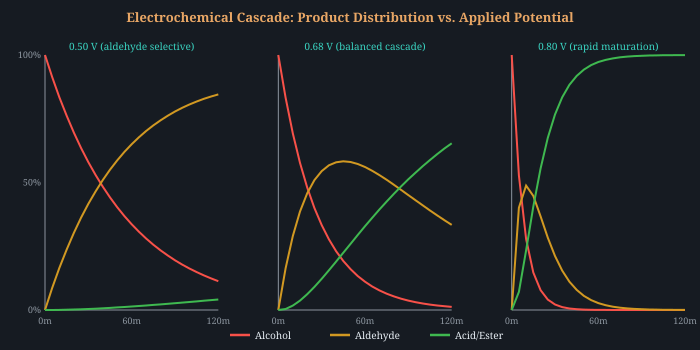
Irradiation of spirits has been studied since the 1960s. Gamma irradiation of Chinese baijiu at 4 kGy produced flavor profiles equivalent to ~2 years of natural aging, with significantly increased ethyl caprylate and ethyl caproate content[44]. The mechanism bypasses Fischer esterification entirely: water radiolysis generates OH• radicals that oxidize ethanol to acetaldehyde, then to acetic acid, which undergoes radical-catalyzed condensation with remaining ethanol. This addresses Barriers 1 and 4 simultaneously.
Electron beam irradiation (EBI) offers the same radical chemistry with more precise dose control, no radioactive source, and FDA clearance for food processing. An unexplored synergy: EBI also degrades lignin in cellulosic matrices[45], potentially liberating vanillin and syringaldehyde from oak chips in the same treatment step—simultaneous ester formation + wood extraction + controlled oxidation in a single pass.
Acid-activated clinoptilolite zeolites catalyze Fischer esterification of acetic acid with alcohols, and sulfated clinoptilolite shows enhanced conversion[46]. Clinoptilolite is a natural zeolite already used in beer filtration and is food-grade (GRAS). Critically, when Cu2+-exchanged, the same zeolite simultaneously adsorbs DMS via electrophilic interaction with sulfur’s lone pair—addressing Barriers 1 and 2 in a single pass-through column. See §2.4 below.
Le Chatelier’s principle applied to Fischer esterification: the products (ethyl acetate + water) occupy slightly less molar volume than the reactants (acetic acid + ethanol) in aqueous solution, giving ΔVrxn ≈ −5 to −15 cm³/mol (including electrostriction and solvation effects). High pressure should therefore shift the equilibrium toward ester products.
The thermodynamic relationship is: ln(KP/K0) = −ΔVrxn·ΔP/(RT). At 400 MPa with ΔV = −10 cm³/mol:
This would raise Keq from 4.0 to ~20, shifting equilibrium conversion from ~45% to ~80% at spirit concentrations. At 600 MPa (commercial HPP range), the shift reaches 11×. HPP is already FDA-approved and commercially deployed for beverage processing (juices, smoothies, guacamole)—the equipment exists and is food-safe.
Experimental support: Santos et al. (2013) demonstrated that HPP at 500 MPa for 5 minutes increased total ester content in red wine by approximately 20%, predominantly ethyl esters of fatty acids[83]. Sensory panels rated HPP-treated wines as smoother and more “aged.” Tao et al. (2014) showed that HPP at 400–600 MPa produced color development equivalent to 6–12 months of conventional aging via accelerated acetaldehyde-mediated anthocyanin-tannin polymerization[84]. The measured ΔV for typical Fischer esterification in aqueous solution is −2 to −8 cm³/mol (more conservative than the −10 modeled here), corresponding to a 1.5–2.7× equilibrium shift at 500 MPa.
Remaining uncertainty: The ΔVrxn for ethyl acetate formation specifically in 40% ethanol-water has not been measured. The value depends on solvation shell reorganization around the ester product in the mixed solvent. A single high-pressure dilatometry measurement would precisely quantify the expected shift.
Pulsed electric field (PEF) treatment at 1.2 kV/cm applied to toasted oak chips in ethanol solutions produces dramatic extraction enhancement[53]: vanillin increased 75%, syringaldehyde increased 371%, furfural increased 50%, and oak lactone increased 13% relative to untreated controls. The effect was strongest at lower ethanol concentrations (5% v/v), where cell membrane electroporation is most effective.
Sustained low-frequency electric field treatment (1 kV/cm, 50 Hz) applied to brandy in oak barrels for 14 months produced 54% more tannins in 5-L barrels and 44% more in 2-L barrels[54]. Remarkably, while extractive compounds increased, acetaldehyde and higher alcohols decreased—suggesting the electric field simultaneously accelerates condensation reactions. This simultaneously addresses Barriers 1, 3, and 4.
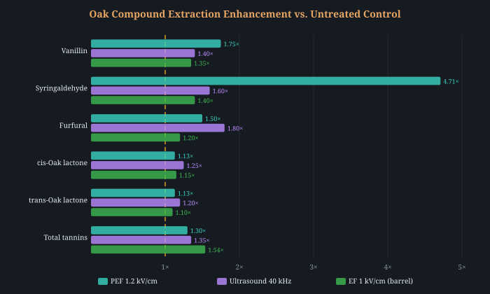
DC Iontophoresis: sustained extraction via electroosmotic flow. Distinct from PEF (high-voltage pulses), low-voltage DC (5–10 V/cm) drives continuous electroosmotic flow through wood’s negatively-charged pore network. Tannins at pH 3–4 carry charge −0.5 to −3 and migrate under the field. Quantitative Nernst-Planck modeling predicts 2–4× extraction enhancement for singly-charged species at 10 V/cm[98]. The key limitation: oak heartwood tyloses severely restrict bulk permeability, confining electroosmotic flow to the charred/toasted surface layer (top 1–5 mm). Optimal geometry: thin oak staves (3–5 mm) sandwiched between graphite mesh electrodes, where the electrokinetic Péclet number rises to ~0.6, giving meaningful acceleration. Pairs naturally with the biochar cathode (§4.11): the oak char layer itself serves as the cathode electrode while simultaneously being the extraction source.
Fischer esterification is first-order in [H+]: rate = k2·[H+]·[AcOH]·[EtOH], where k2 ≈ 4.8×10−4 L²/(mol²·s) at 25°C, Ea ≈ 56 kJ/mol[62][63]. Since the rate depends directly on proton concentration, lowering pH from 4.0 (native whiskey) to 3.0 gives a 10× rate increase; to 2.5 gives 31.6×. Combining pH 3.0 with 50°C heating yields an estimated 80× acceleration vs. native conditions—compressing months of ester development into ~1.5 days.
Keq is thermodynamic and unaffected by pH: the equilibrium position remains ~69.8% conversion at 40% ABV regardless of catalyst. pH manipulation accelerates approach to equilibrium only. Crucially, adding food-safe acids (citric, tartaric, phosphoric) does not shift the acetic acid esterification equilibrium because ethanol is in ~1000× molar excess over all acids combined.
However, pH manipulation has significant cross-barrier side effects: lower pH suppresses Maillard browning (optimal pH 6–8[61]), accelerates tannin extraction from oak, and accelerates acid-catalyzed acetaldehyde–tannin condensation. This means pH acidification must be time-boxed to the esterification phase, not maintained continuously. Post-treatment neutralization with sodium bicarbonate returns pH to 4.0 (the phosphate or citrate anion remains but is below sensory threshold).
Immobilized lipases (Novozym 435 / CALB) catalyze ester formation with excellent substrate selectivity—producing specific flavor esters (ethyl octanoate, ethyl decanoate, isoamyl acetate) impossible via non-selective Fischer chemistry. However, lipase esterification requires water activity aw < 0.6–0.7 for the synthesis direction[64]. At 40% ABV, aw ≈ 0.93, which thermodynamically favors hydrolysis—the reverse of the desired reaction. Worse, Novozym 435’s PMMA support dissolves in 40% ethanol (16.6% mass loss over 4 cycles), causing dual-mechanism deactivation: protein aggregation plus support texture modification[85].
Cutinase: a better enzyme family. Thermobifida fusca cutinase achieves 99.2% yield for ethyl hexanoate (a key whiskey ester) at 40°C and 0.5% water content. Fusarium solani cutinase produces ethyl butyrate at 1.15 μmol/mg/min with 95% equilibrium conversion in organic media[86]. Unlike lipases, cutinases do not require interfacial activation and tolerate up to 8% water. However, they show lower binding affinity for ethanol (−2.78 kcal/mol) than for C4–C6 alcohols, meaning ethyl ester yields are lower than butyl or hexyl esters.
The most viable architecture is an external packed-bed membrane reactor: spirit is circulated through a column of cutinase immobilized on zeolite (not PMMA), with a pervaporation membrane continuously removing water from the reaction zone to maintain aw < 0.5. The low absolute ester concentrations needed in whiskey (1–500 mg/L total esters) mean even modest reactor conversions are sufficient—a key insight that makes the thermodynamic penalty at high aw less relevant than it appears.
Fischer esterification is equilibrium-limited at ~65–70% conversion. Per Le Chatelier, continuously removing the water byproduct shifts the equilibrium toward ester products. Molecular sieve 3A (potassium-exchanged zeolite A, pore diameter 3.0 Å) admits water molecules (kinetic diameter 2.6 Å) but excludes ethanol (~4.4 Å), making it a perfectly selective water adsorbent for spirit applications[96].
Published esterification studies show molecular sieve addition increases conversion from 75.2% to 98.3% — a 23-percentage-point improvement[97]. For a 5 L spirit system: 200–400 g of 3A beads (2 mm) in a 25–50 mm × 300–500 mm column removes 40–80 g water per cycle before regeneration. Regeneration is simple: heat to 175–260°C for 2–4 hours (kitchen oven), reusable for hundreds of cycles. Food-grade 3A molecular sieve is commercially available for ~$20/kg.
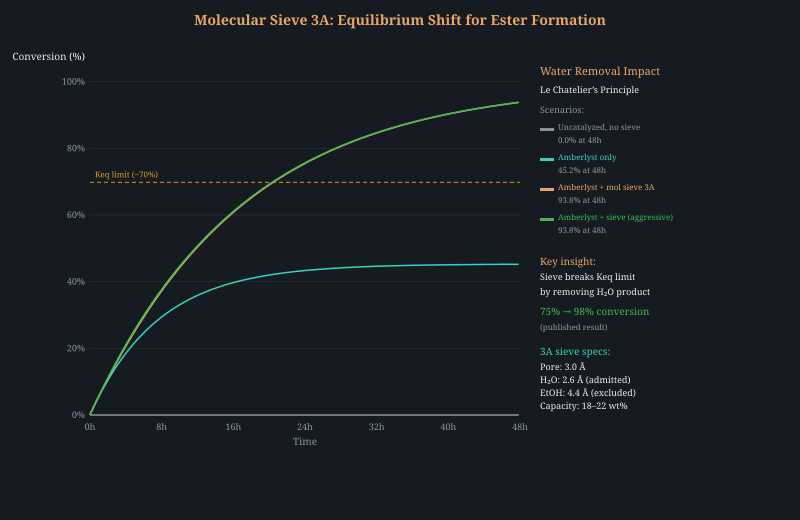
Optimal architecture: Amberlyst-15 + molecular sieve 3A recirculation loop. Spirit is pumped (peristaltic, 0.5–2 L/min) through a two-stage packed bed: Stage 1 contains Amberlyst-15 (acid catalyst, §1.1) accelerating ester formation; Stage 2 contains 3A molecular sieve removing the water byproduct. The catalyst generates esters, the sieve removes the equilibrium-limiting water, and the recirculation provides continuous contact. At 50–70°C, this combination should push conversion to >95% in hours rather than years.
1,1-Diethoxyethane (DEE) is one of the most important aging congeners in whiskey, contributing green-apple, fruity, and ethereal notes. Its concentration correlates directly with perceived maturity. In barrel aging, DEE forms slowly from the acetalization of acetaldehyde with ethanol (AcH + 2 EtOH → DEE + H2O, acid-catalyzed). DEE also protects acetaldehyde from overoxidation and volatilization—it is a storage platform for the reactive intermediate.
PEM electrolysis approach: Kawaguchi et al. (2021) demonstrated direct conversion of ethanol to DEE in a proton-exchange membrane (PEM) cell at ambient temperature with 78% Faradaic efficiency[112]. The Nafion membrane serves a dual role: PEM for the electrochemical cell AND solid acid catalyst for the acetalization step. The anode oxidizes ethanol to acetaldehyde; the protons generated create the acidic environment on the membrane surface that drives acetalization. Cathode produces H2 (benign, self-venting). No reagents beyond ethanol and electricity.
Chloride-mediated approach: Li & Bartlett (2021) achieved >95% Faradaic efficiency to DEE using chloride mediation on inexpensive glassy carbon electrodes[113]. The pathway: Cl− → Cl2 → ethyl hypochlorite → acetaldehyde + HCl → DEE. The chloride is regenerated catalytically. The advantage: much lower overpotential than direct ethanol oxidation.
Rate estimate for spirits: At 10 mA/cm2 on a 100 cm2 electrode (1 A total, ~1.5 W), with 50% derated FE for aqueous conditions, acetaldehyde generation is ~18.7 mmol/hr. If 20% acetalizes (conservative for 40% ethanol), DEE production is ~0.44 g/hr. Typical aged-whiskey DEE concentrations (5–20 mg/L) would be reached in minutes for a 5 L batch.
PROMISING Solid acid catalysis in packed-bed configuration—FDA-cleared materials, published kinetics. PROMISING Electrochemical gold-surface catalysis—published and validated in distilled spirit with sensory confirmation[37]. SPECULATIVE TiO2 photocatalytic esterification (demonstrated for fatty acids, untested in spirits). PROMISING PEF/EF oak extraction (published data in oak+ethanol and brandy barrels, compound-specific quantitative results[53][54]). SPECULATIVE EBI (radical-mediated, studied since 1960s, but EBI+oak combination untested). PROMISING Zeolite dual-function column (natural, food-grade, dual Barrier 1+2). PROMISING pH acidification (published first-order [H+] kinetics, food-safe, 10–80× acceleration, time-box required[62]). DEAD END Lipase at 40% ABV (water activity too high for synthesis direction[64]). PROMISING HPP equilibrium shift (Le Chatelier—20% ester increase measured at 500 MPa, 6–12 months color development in wine[83][84]). PROMISING PEF esterification (18.4% Ea reduction at 13.3 kV/cm, no catalyst needed[78]). PROMISING Molecular sieve 3A water removal (75% → 98% conversion, food-grade, reusable, ~$20, pairs with Amberlyst[96][97]). PROMISING DEE electrochemical synthesis (78–95% FE, key aging compound directly correlated with maturity[112][113]).
New-make whiskey contains dimethyl sulfide (DMS, bp 37°C), dimethyl disulfide (DMDS, bp 109°C), and dimethyl trisulfide (DMTS, bp 170°C)—volatile organosulfur compounds responsible for cooked-cabbage, rubbery, and metallic off-notes. These are produced during fermentation from S-methylmethionine (SMM) and cysteine precursors in the malt[11]. In traditional aging, the charred barrel interior acts as an activated carbon bed: organosulfurs adsorb onto the char layer over 5–8 years[11]. The question is whether we can replicate that adsorption in hours rather than years.
Copper’s affinity for sulfur compounds is the reason pot stills are made of copper: Cu2+ ions on the still surface catalyze the decomposition of volatile thiols and DMS during distillation[12]. But copper contact during distillation is limited to seconds of vapor-phase exposure. A post-distillation copper cartridge could extend this contact dramatically.
Activated carbon provides ~1000 m2/g of surface area for physisorption, while Cu2+ sites provide chemisorption via coordination to the sulfur lone pair. Combining these in a Cu/AC cartridge gives both mechanisms in a single pass-through column. Granular activated carbon is already used in vodka and neutral spirit filtration; impregnating it with copper sulfate followed by calcination yields Cu/AC adsorbents with documented selectivity for DMS and H2S in petrochemical applications[13].
HKUST-1 (also called Cu-BTC or Cu3(BTC)2, where BTC = 1,3,5-benzenetricarboxylate) is a porous coordination polymer with open Cu2+ metal sites accessible within its 9 Å pore windows. It achieves 17 wt% DMS uptake capacity via direct coordination of the DMS sulfur to the open copper center[14]—an extraordinarily high capacity compared to activated carbon alone (~2–5 wt%).
HKUST-1 is selective: it preferentially binds organosulfurs over ethanol and water because the Cu2+–S coordination bond (soft acid–soft base in Pearson’s HSAB framework) is thermodynamically stronger than Cu2+–O(ethanol) or Cu2+–O(water) interactions[14].
The obstacle: HKUST-1 is not currently food-grade. However, the Cu2+ ions are coordinatively bound within the framework and do not leach under mild conditions (pH 3–7, room temperature). Encapsulating HKUST-1 crystals in a PTFE or food-grade silicone cartridge with microporous barriers would prevent particle ingestion while allowing DMS permeation to the adsorbent surface. This is an engineering problem, not a chemistry problem.
The petroleum industry has invested decades in photocatalytic oxidative desulfurization (ODS): TiO2 under UV light generates electron-hole pairs whose valence-band holes oxidize organosulfur compounds to sulfoxides (R2SO) and sulfones (R2SO2), which are non-volatile and odorless[15]. The reaction:
This is not mere speculation. Lin et al. demonstrated that S-doped TiO2 degrades DMS under visible light (not just UV), with reaction kinetics enhanced by humidity—directly applicable since spirit is ~60% water[40]. The sulfur doping narrows TiO2’s band gap from 3.2 eV (UV-only) to ~2.5 eV (visible light), enabling the use of inexpensive LED illumination.
Man et al. went further: UiO-66@TiO2 nanocomposites (a zirconium MOF coupled to TiO2) achieved 17.8× and 7.1× higher DMS degradation rates than pristine UiO-66 or TiO2 alone[41]. The MOF provides high-surface-area adsorption sites that concentrate DMS at the photocatalytic surface—a synergistic mechanism. The nanocomposite showed stable performance over multiple cycles.
A two-stage adsorption mechanism for DMS in HY zeolite was revealed: DMS preferentially occupies the 12T-window of the FAU structure, with a transition at 50 molecules per unit cell when surface Brønsted acid sites saturate[47]. Cu(II)-exchanged zeolites show enhanced DMS adsorption via stronger electrophilic interaction with sulfur’s lone pair. Calcined clinoptilolite—already used in beer filtration—shows significantly higher DMS/DMDS adsorption than raw zeolite, and regenerates at 200–350°C.
From textile science: cellulose acetate/cyclodextrin electrospun fiber mats achieve up to 90% adsorption of dimethyl disulfide (DMDS) from solution[48]. These mats combine ultra-high surface area from nanoscale fiber diameter with cyclodextrin host-guest chemistry for selective molecular recognition. The substrate (cellulose acetate) is food-compatible and the mats are regenerable. This outperforms traditional activated carbon for specific volatile sulfur compounds and could serve as a disposable inline filter cartridge.
PROMISING Cu/AC cartridge (known materials, simple engineering). PROMISING Cu-clinoptilolite dual-function column (simultaneous esterification + sulfur removal). SPECULATIVE HKUST-1 MOF (excellent adsorption data, food-grade pathway unclear). SPECULATIVE S-doped TiO2 photocatalytic ODS (published DMS-specific data, but selectivity in complex spirit matrix unproven[40]). SPECULATIVE Cyclodextrin nanofiber mats (90% DMDS removal, food-compatible, untested in spirits).
Morishima et al. demonstrated by small-angle X-ray scattering (SAXS) and dynamic light scattering (DLS) that aged whiskies develop two populations of supramolecular clusters[16]:
Utsunomiya et al. confirmed by 1H NMR that hydrogen bonding strength in aged whiskies is dominated by phenolic components from oak, and that this high-dimensional molecular structure contributes to mellowness[17].
The thermodynamic evidence is unambiguous:
The implication is provocative: simply aging at 35–40% ABV instead of 63% ABV could dramatically accelerate the clustering that defines mellowness. This changes nothing about the chemistry—only the solvent environment in which self-assembly occurs.
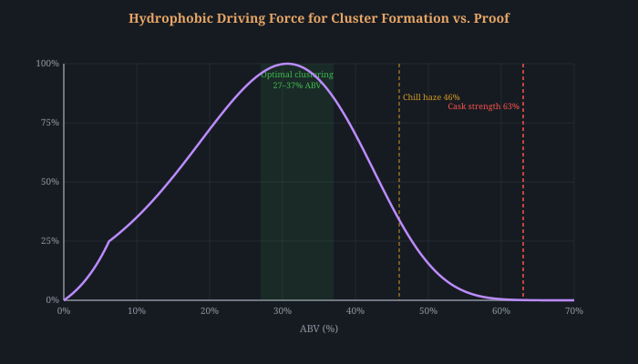
Drug delivery scientists solved rapid amphiphilic self-assembly decades ago. Flash nanoprecipitation (FNP) achieves nanoparticle formation in milliseconds by rapidly mixing an organic solvent stream (containing dissolved amphiphile) with an aqueous anti-solvent[21]. Mixing timescales of 1–2 ms achieve complete solvent exchange, driving supersaturation and nucleation. This was the enabling technology for COVID-19 vaccine lipid nanoparticle (LNP) manufacturing.
The parallel to whiskey is direct. Tannic acid—a polyphenol closely related to the ellagitannin extractives in whiskey—has been used in FNP to form nanoparticles via hydrogen bonding and electrostatic interactions[22]. In situ SAXS measurements during microfluidic mixing reveal three stages of self-assembly: nucleation (~35 Å aggregates when supersaturation exceeds unity), fusion (70–300 ms, exponential mass increase), and insertion (slower single-chain addition)[23].
The Ouzo effect demonstrates that whiskey already contains this physics. When whiskey is diluted with water, hydrophobic extractives spontaneously form nanodroplets (1–3 μm) via surfactant-free spontaneous emulsification—the same process FNP harnesses with controlled mixing[24]. The “pre-Ouzo” regime features nanometer-scale clusters covered by ethanol surface layers, structurally resembling the Morishima small clusters.
When an ethanol-water solution partially freezes, ice crystals exclude solutes, creating eutectic concentration zones where extractive molecules are forced into close proximity at dramatically elevated local concentrations. This achieves supersaturation in the liquid microphase between ice crystals—the primary thermodynamic driver of self-assembly nucleation[25].
The precedent from prebiotic chemistry is compelling. Freeze-thaw cycling drives condensation and self-assembly in eutectic solutions at rates far exceeding room-temperature equivalents[25]. Peter et al. showed that freeze-thaw promotes structural reorganization between amphiphilic vesicles—fatty acid self-assembly into supramolecular structures under these conditions[26]. Li et al. demonstrated that repeated freeze-thaw drives polymer chain alignment and intermolecular aggregation in unfrozen liquid microphases[27]—directly analogous to phenolic cluster formation.
The equipment is trivial: a controlled freezer. At 40% ABV, partial freezing begins around –23°C (not –10°C as commonly stated; the ethanol-water phase diagram requires much lower temperatures at this proof). Parameters to optimize: freezing rate (slow maximizes cryoconcentration), hold time at minimum temperature, number of cycles, and thaw rate (gentle warming prevents precipitation crash-out).
Quantitative reality check: Cryoconcentration does not accelerate Fischer esterification. At –30°C, the liquid phase concentrates to ~48% ABV (1.19×), but the Arrhenius temperature penalty reduces the rate constant by 355× (Ea = 64 kJ/mol). Even with third-order concentration enhancement (1.19³ = 1.69×), the net ester formation rate is <0.5% of room temperature. The break-even concentration factor would be 5.7× (229% ABV)—physically impossible. The value of freeze-thaw lies entirely in supramolecular restructuring: concentrating phenolics and strengthening hydrogen-bond networks in cryoconcentrated zones, not in ester synthesis.
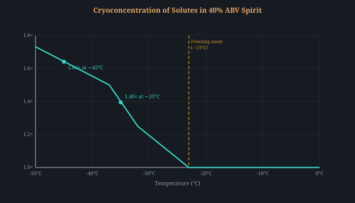
In 2015, Ono et al. demonstrated “living” supramolecular polymerization in Science: small seed aggregates template the growth of supramolecular polymers with controlled length and narrow dispersity[28]. The mechanism is nucleation-elongation: pre-formed nuclei eliminate the kinetic barrier to new aggregate formation, allowing rapid and directed growth.
The whiskey implication: could a small volume of properly aged whiskey (containing Morishima clusters) serve as a seed to template cluster formation in unaged spirit? If the small clusters grow by monomer addition (extractive molecules inserting into existing aggregates), then seeding would bypass the nucleation bottleneck entirely. This is standard practice in crystallization (sugar, pharmaceutical APIs) and is now proven for supramolecular polymers.
From battery intercalation chemistry: layered double hydroxides (LDHs) are anionic clays that reversibly intercalate organic anions between brucite-like hydroxide sheets. In battery research, layered materials (LiCoO2, LiFePO4) store and release lithium ions at rates controlled by applied potential. In an LDH, pH replaces voltage as the driving force.
Vanillic acid and gallic acid—both key whiskey barrel extractives—have been successfully intercalated into LDH galleries with controlled, sustained release following Higuchi diffusion kinetics[43]. The LDH absorbs phenolic compounds at high pH and releases them at the slightly acidic pH of new-make spirit (~3.5–4.5). This mimics years of barrel extraction in a programmable reservoir format.
The kinetics are directly relevant: the Higuchi diffusion model that describes LDH phenolic release is the same model that describes natural barrel extraction. But the LDH concentration of extractives per unit mass is orders of magnitude higher than wood, and the release medium (bulk liquid rather than through centimeters of stave) eliminates mass-transfer limitations.
The approaches above converge on a two-phase protocol that separates the extraction problem from the assembly problem:
| Phase | Objective | Proof | Duration | Method |
|---|---|---|---|---|
| Phase 1: Extraction | Get phenolic extractives into solution | 63–70% ABV | 1–4 weeks | Ultrasonic wood extraction[29], charred oak staves |
| Phase 2: Clustering | Drive amphiphilic self-assembly | 35–40% ABV | 1–4 weeks | Dilute, then freeze-thaw or FNP; no wood contact |
Phase 1 operates at high proof where extraction kinetics are fastest. Phase 2 operates at low proof where the hydrophobic driving force for clustering is strongest. The conventional approach—doing both at 63% ABV in a barrel—optimizes for neither.
Piccolo (2001) demonstrated that humic substances are not macromolecules but supramolecular associations of small heterogeneous molecules held together by weak forces: van der Waals, π–π stacking, CH–π interactions, and hydrogen bonds[49]. They are amphiphilic (hydrophobic aromatic core, polar ionizable groups), self-assembling (10 nm to 1 μm aggregates), pH-sensitive, and disruptable by organic acids. This is structurally identical to the Morishima supramolecular clusters in aged whiskey. The soil science literature has decades of research on accelerating, controlling, and templating this type of assembly, including metal cation bridging (Ca2+, Mg2+) and organic acid disruption/reformation cycles to reach equilibrium faster.
Zemb et al. (2016) explained how “microemulsions formed by solvent mixtures without conventional surfactants” arise spontaneously in ternary ethanol/water/hydrophobic-oil systems[50]. The “pre-Ouzo” domain produces surfactant-free microemulsions with nanometer-scale clusters (1–10 nm) stabilized by ethanol acting as a hydrotrope at the water-oil interface. This is exactly the ethanol-water-extractive system present in whiskey. The cosmetics and perfume literature has mapped these ternary phase diagrams extensively—including with eugenol (a wood-derived phenol) as the oil phase—and understands how to control cluster size through composition ratios, temperature, co-hydrotropes, and dilution pathways through phase space. The Morishima 0.75 nm clusters fall squarely in the pre-Ouzo size regime.
In cement science, adding just 1–4 wt% of pre-formed calcium silicate hydrate (C-S-H) seed particles accelerates hydration dramatically: 85% earlier peak rate, 120% higher maximum hydration rate, and 78% compressive strength increase at 24 hours[51]. The mechanism is heterogeneous nucleation: seed particles provide nucleation sites away from existing surfaces, and the process is autocatalytic—product stimulates its own formation.
Deep eutectic solvents (DES) based on choline chloride paired with food-grade acids extract 2–10× more polyphenolic material from wood than ethanol alone[56]. Choline chloride:lactic acid (1:2 molar) at 50–80°C for 1–4 hours achieves 91.8% lignin extraction from hardwood[57]. Choline chloride is a vitamin B4 precursor (FDA GRAS, ~$10/lb as livestock feed supplement). Lactic acid is food-grade. Both are fully water-miscible, so the concentrated extract can be diluted and dosed into spirit in controlled amounts.
The application is as an oak pretreatment: soak toasted oak chips in ChCl:lactic acid DES at 60–80°C for 2–4 hours, strain, dilute the extract, and add measured drops per liter of spirit. This produces a “barrel essence” concentrate orders of magnitude richer in ellagitannins, vanillin, and phenolic aldehydes than conventional ethanol extraction. The extract feeds directly into the clustering pathway (Barrier 3) and provides acid/aldehyde substrates for esterification (Barrier 1).
Supercritical CO2 (scCO2, >31.1°C, >73.8 bar) offers a fundamentally different approach: extract only the desirable flavor compounds while leaving harsh tannins behind. The selectivity arises from solubility physics—scCO2 efficiently dissolves small, nonpolar-to-moderately-polar molecules (oak lactones, vanillin, eugenol) but cannot solubilize the large, polyhydroxylated ellagitannins (MW ~934 Da) that make young spirit astringent[82].
Selectivity ladder (pressure tuning at 40–50°C):
This selectivity profile is arguably ideal for accelerated aging: you extract the “good” flavors directly and skip the compounds that normally require years of oxidative polymerization to become palatable. The scCO2 extract can be added to spirit without the astringency burden of unpolymerized ellagitannins, eliminating the need for the oxidation cascade (Barrier 4) to mellow them.
Cellulase/hemicellulase enzyme cocktails can hydrolyze oak wood polymers to release flavor precursors that normally require years of slow acid hydrolysis in barrel: xylose and arabinose from hemicellulose (furfural precursors via dehydration), ferulic acid from hemicellulose–lignin crosslinks (vanillin precursor), and glycosidically-bound aroma compounds including vanillin glucoside, eugenol glucoside, and guaiacol glucoside[58]. A 1993 patent (US 5,356,641) demonstrated cellulase digestion of oak at 50–60°C followed by distillation to produce a dark extract with aged character.
Food-grade cellulase and hemicellulase preparations are available from homebrew suppliers (Lallzyme, Novozymes equivalents). Protocol: soak oak chips in water at pH 5.0 and 50°C, add enzyme blend (0.1–0.5 mL per gram of wood), incubate 24–72 hours with periodic agitation, then drain and dry the pretreated chips before adding to spirit. The enzyme-opened wood structure allows faster and deeper extraction by the spirit.
Real-time PTR-ToF-MS monitoring of oak toasting reveals that lignin-derived compounds (vanillin, guaiacol, eugenol) increase by approximately one order of magnitude for each 25°C increase in toasting temperature[59]. Critically, different compounds have different optimal toast levels: whiskey lactones peak at light toast (~165°C, 2h) and are destroyed by heavy toasting, while vanillin peaks at medium toast (~180–190°C) and guaiacol increases monotonically with temperature[60]. Traditional cooperage selects a single toast level, necessarily compromising between compounds.
A multi-toast blending strategy uses separate batches of oak chips toasted to different temperatures: light toast (165°C, 2h) for lactones, medium toast (180°C, 2.5h) for vanillin/eugenol, and heavy toast (200°C, 1h) for guaiacol/cyclotene. Adding equal portions of each to spirit produces a more complete flavor profile than any single toast level can achieve.
Ultrasonic cavitation at 20–40 kHz generates microjets (100–200 m/s) and localized pressures (~1000 atm) that physically erode oak cell walls, bypass diffusion-limited extraction, and increase Sherwood number by 3–10×[68][69]. SEM imaging confirms disruption of ray parenchyma cells and opening of tyloses—exposing medullary ray tissue normally sealed in intact staves.
Published extraction enhancement factors for ultrasonically-treated oak:
| Compound | Enhancement | Frequency | Source |
|---|---|---|---|
| Vanillin | 2–8× | 20–40 kHz | Zhang & Xu 2013, Tao et al. 2014 |
| trans-Oak lactone | 3–6× | 20 kHz | Chang & Chen 2002 |
| Syringaldehyde | 2–4× | 20 kHz | Zhang & Xu 2013 |
| Total tannins | 2–5× | 20–40 kHz | Garcia-Martin & Sun 2013 |
| Total phenolics | 2–6× | 20–40 kHz | Multiple sources |
Tao et al. (2014) found that 3 cycles of 30-minute ultrasonication (40 kHz, 60 W/L) with 24-hour rest periods produced spirits at 85–90% analytical equivalence of 3-year barrel-aged product[70]. Sensory panel scored ultrasound-treated at 78/100 vs. 85/100 for 3-year aged vs. 52/100 for new-make. Main deficiency: “depth” and “roundness”—consistent with extraction being accelerated but oxidative chemistry lagging behind.
The strongest published result: Delgado-González et al. (2017) demonstrated that 3 days of ultrasound-assisted aging = 2 years of conventional brandy aging (sensory panel, 8 trained judges). A recirculating system with 40 W/L at 20 kHz + spirit flow through oak chip bed achieved 37 quantified volatiles matching the 2-year profile. The 5× synergy from circulation + sonication (vs. static sonication alone) suggests recirculating pump design is essential[90]. Chang (2005) separately confirmed 1 day to 1 week = 1 year for rice spirits at 20 kHz[91].
Critical nuance: pulsed protocols outperform continuous. Continuous sonication above 50 W/L causes rapid temperature rise and radical-mediated degradation of delicate esters. Optimal: 30 min sessions at 40–60 W/L with 24h rest between cycles. Radical generation (OH• from water sonolysis, 1–10 μM H2O2/min at standard power densities) provides additional oxidative chemistry essentially free. Operate at room temperature (20–35°C): the ultrasonic advantage is 3–8× at 20°C but only 3× at 50°C, because cavitation intensity decreases with increasing vapor pressure.
Sono-electro-Fenton synergy: Gonzalez-Garcia et al. (2007) showed ultrasound improves cathodic H2O2 production efficiency from ~20% to ~60% (3× improvement) by enhancing O2 mass transfer to the carbon felt cathode[92]. This makes a combined ultrasonic bath + electro-Fenton cell (§4.10) extremely promising: sonication simultaneously extracts oak compounds, generates radicals from water sonolysis, AND triples the electro-Fenton H2O2 yield.
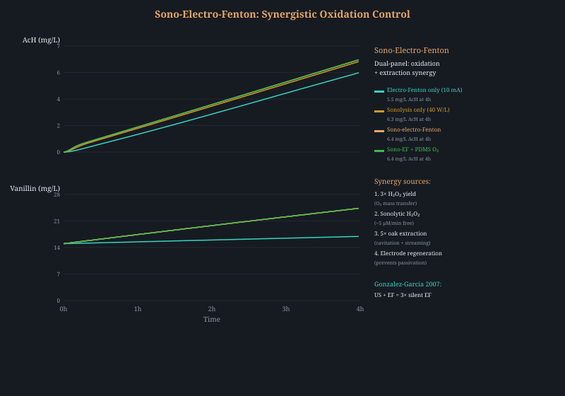
Synergy with laccase: Gonçalves et al. (2013) showed laccase + 40 kHz ultrasound produced 40% faster phenol transformation than laccase alone[71]—acoustic microstreaming enhances enzyme-substrate contact. Power must be kept below ~50 W/L to avoid laccase denaturation from cavitational shear.
Microwave-assisted extraction (MAE) exploits preferential heating of bound water within oak cell walls at 2.45 GHz, generating localized superheating that ruptures cellular structure and drives extractives outward at 3–10× the rate of conventional maceration[80]. The selectivity arises from dielectric properties: water (ε″ ≈ 10–12 at 2.45 GHz) absorbs microwave energy more efficiently than ethanol (ε″ ≈ 6–7), with bound water in wood cell walls being the primary target.
Chang et al. (2004) demonstrated that 2–5 minutes of microwave treatment of rice spirit with wood chips produced chemical profiles (fusel alcohol ratios, ester content, aldehyde reduction) resembling 6–12 months of conventional aging[81]. The key mechanism is not ester formation but extraction acceleration: microwave energy ruptures wood cell walls and drives mass transfer of vanillin, oak lactones, and tannins into the spirit.
Practical parameters: Power 100–600 W, temperature must stay below 78°C (ethanol boiling point), treatment 1–10 minutes (longer risks thermal degradation of delicate esters). A sealed Pyrex vessel (to prevent ethanol loss) in a consumer microwave oven is sufficient for proof-of-concept. Oak chips (2–5 mm) are preferred over staves for surface area. A 40% ABV spirit at 2.45 GHz has an estimated dielectric loss factor ε″ ≈ 8–9, providing efficient bulk heating, but the differential heating of bound water within wood cells is the mechanism of interest.
Dissolving CO2 at 50–100 bar into the spirit produces three simultaneous effects. First, reversible pH buffering: dissolved CO2 forms carbonic acid (H2CO3), lowering the spirit to pH 2.8–3.0—directly measured at 70–100 bar[109]. This acidification accelerates Fischer esterification (§1.10) without adding any chemical acid. Upon depressurization, CO2 escapes entirely, pH returns to native, and no residue remains.
Second, enhanced ultrasonic extraction: combined ultrasound + pressurized CO2 (below supercritical, 50–80 bar) delivers 3–5× improvement in phenolic extraction from plant material compared to ultrasound alone, via CO2-assisted swelling of wood cell walls and enhanced acoustic streaming[110]. Cavitation thresholds decrease under pressurized CO2, allowing “softer” cavitation with lower peak temperatures (less thermal damage to delicate congeners) while maintaining radical generation. At 50 bar, standard 20 kHz ultrasonic probes still generate effective acoustic cavitation[111].
Third, water activity reduction: CO2 dissolution slightly reduces aw from ~0.95 to ~0.85–0.90, modestly improving the thermodynamic favorability of ester synthesis. This is insufficient alone for lipase-catalyzed esterification (which requires aw < 0.6), but it stacks beneficially with Amberlyst catalysis and molecular sieve water removal (§1.12).
PROMISING Proof optimization (straightforward physics, no novel equipment). SPECULATIVE Flash nanoprecipitation and freeze-thaw (sound first-principles, untested in spirits). MOONSHOT Seeded supramolecular polymerization (strongly reinforced by concrete C-S-H seeding data). PROMISING DES oak extraction (food-safe, 2–10× more efficient than ethanol, entirely novel in spirits[56]). PROMISING Enzymatic pretreatment (patented, food-grade enzymes, releases glycoside-bound aromas[58]). PROMISING Multi-toast blending (compound-specific optimization, immediately actionable[59]). PROMISING Ultrasonic cavitation (5–10× extraction, 85–90% of 3-year barrel analytically, synergistic with laccase[70]). PROMISING Microwave-assisted extraction (2–5 min ≈ 6–12 months conventional aging, zero additional cost[81]). SPECULATIVE scCO2 selective extraction (ideal selectivity profile but high capital cost[82]).
The spirit phase diagram. A spirit is a ternary system: water + ethanol + hydrophobic congeners (oak extractives, long-chain esters, higher alcohols). Zemb et al. (2016) showed that such ternary systems exhibit a surfactant-free microemulsion phase with ~1.8 nm correlation length—the pre-Ouzo structure[132]. The phase diagram has four regions:
| Region | Structure | Ethanol | Congeners | Sensory |
|---|---|---|---|---|
| Molecular solution | No aggregates | >45% ABV | Low | Harsh, hot |
| Pre-Ouzo | 1.8 nm microemulsions | 27–40% | Moderate | Smooth, complex |
| Ouzo | Metastable emulsion | <27% | High | Cloudy, bitter |
| Phase-separated | Two liquid phases | <20% | Very high | Oily, astringent |
Barrel aging is a 15-year trajectory through this diagram. New make enters at ~63% ABV with minimal extractives (lower right of the molecular solution zone). Over years, ethanol decreases (angel’s share) and congeners increase (oak extraction). The trajectory slowly migrates into the pre-Ouzo zone—this is when tasters describe the whiskey as “smoothing out.” The goal of accelerated aging is to navigate to the pre-Ouzo zone in weeks, not decades.
Four mechanism classes for phase-space navigation:
The multiplicative principle: Techniques from different classes act on independent thermodynamic variables. Moving left (reducing ethanol) while shifting the boundary right (increasing ionic strength) produces a larger supersaturation than either alone—the effects multiply. Adding an external force (DEP field) on top of thermodynamic supersaturation further accelerates kinetics. And seeding provides nuclei that grow faster in a supersaturated environment. The optimal protocol selects one technique from each class and applies them simultaneously.
Recommended combination (from phase-diagram analysis):
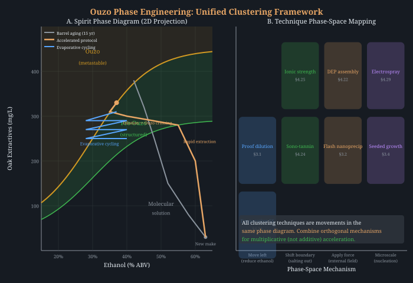
Wood-aged spirits undergo a sequential oxidation cascade that is central to flavor maturation:
The product distribution at any time point depends on the oxygen flux rate. Too fast: acetaldehyde and acetic acid dominate, producing harsh, vinegary character. Too slow: the cascade stalls at early intermediates, and the mature ester/acid balance never develops. The barrel naturally throttles O2 delivery to approximately 0.01–0.10 mL/L/day depending on stave thickness, wood species, and ambient humidity[30]. This exquisitely slow delivery is what makes barrel aging “work”—and why simply bubbling air through spirit produces acetic acid, not aged character.
Polydimethylsiloxane (PDMS) has an oxygen permeability of ~600 Barrers—orders of magnitude higher than most polymers—and is FDA-approved for food contact under 21 CFR 177.2600[31]. A PDMS tube immersed in spirit, with air or O2/N2 mixtures flowing through the lumen, delivers dissolved oxygen at a rate precisely controlled by:
This allows programming an O2 flux profile that exactly mimics barrel behavior—or deliberately deviates from it. One could deliver the total oxygen exposure of 5 years of barrel aging in weeks by using thinner tubing and pure O2, while maintaining the dissolved O2 concentration below the threshold where acetaldehyde over-accumulates.
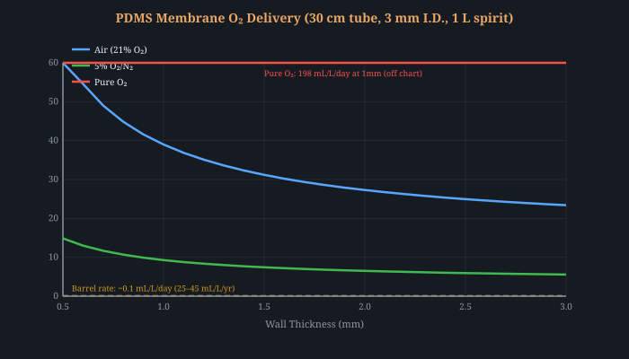
The wine industry already uses this principle: micro-oxygenation (MOX) delivers 1–5 mL O2/L/month through ceramic or PDMS diffusers to accelerate tannin polymerization and color stabilization[30]. Extending MOX to spirits—with the lower rates appropriate for the simpler phenolic matrix—is a straightforward adaptation.
The Fenton reaction generates hydroxyl radicals from hydrogen peroxide and ferrous iron:
OH• is among the most powerful oxidants in chemistry (E° = +2.80 V), capable of abstracting hydrogen from virtually any C–H bond. In sub-stoichiometric doses, Fenton oxidation could drive the aldehyde → acid step of the cascade at controlled rates. The key is metering: Fe2+ at μM concentrations and H2O2 at mM concentrations, delivered by syringe pump over hours/days, prevents radical overproduction[32].
An alternative: photo-Fenton, where Fe3+ is photoreduced back to Fe2+ by UV/visible light, allowing catalytic cycling with minimal total iron. This limits residual iron to ppb levels[32].
This approach borrows directly from battery science, where applied electrochemical potentials drive selective redox reactions at electrode surfaces with exquisite control. The key insight: different oxidation steps in the whiskey cascade occur at different potentials, and the applied voltage acts as a precisely tunable oxygen flux equivalent.
Xiong et al. identified two distinct oxidation windows in distilled spirit using cyclic voltammetry at a gold electrode[38]:
| Potential (V) | Reaction Driven | Cascade Step |
|---|---|---|
| 0.45–0.58 V | Primary alcohol → aldehyde | Initial oxidation |
| 0.63–0.72 V | Aldehyde → carboxylic acid | Acid formation |
| 0.80 V | Net ester formation (combined cascade) | Maturation endpoint |
| 1.445 V (Co3O4) | 4e– pathway: ethanol → ethyl acetate directly | Complete 4-step cascade[39] |
Zhou et al. confirmed that electrochemical treatment of grain spirit (Baijiu) produced flavor profiles consistent with aged product[33]. The critical advantage over barrel aging or MOX: selectivity. By stepping through potentials, one can drive the cascade in the correct sequence—first accumulating aldehydes, then converting them to acids, then to esters—without over-oxidation at any stage.
Electrode materials determine selectivity. Platinum oxidizes broadly; Co3O4 nanosheets with exposed (111) facets achieve 98% Faradaic efficiency for the ethyl acetate pathway[39]; boron-doped diamond (BDD) generates OH• radicals at higher potential. Gold is food-safe (E175) and directly demonstrated in spirit.
White-rot fungi produce laccases and peroxidases that selectively cleave lignin polymers into vanillin, syringaldehyde, and other flavor-relevant phenolic compounds—the same chemistry that barrel aging achieves over years via slow chemical oxidation. Immobilized laccase on graphene oxide achieved 93.7% lignin degradation versus 56.2% for free enzyme[52]. A remarkable positive feedback loop: vanillin itself acts as a laccase mediator, enhancing further lignin degradation by 47.3%—meaning the product accelerates its own formation.
Quantitative kinetics for Trametes versicolor laccase[65][66] on whiskey-relevant substrates:
| Substrate | Km (μM) | kcat (s−1) | kcat/Km (M−1s−1) |
|---|---|---|---|
| Syringaldehyde | 26–40 | 4,800–10,200 | ~2.5×108 |
| Guaiacol | 60–200 | 1,500–4,000 | ~2×107 |
| Catechin | 15–60 | 1,000–3,500 | ~6×107 |
| Gallic acid | 30–90 | 2,000–5,000 | ~5.5×107 |
| Vanillin | 80–250 | 500–2,000 | ~6×106 |
| Ellagic acid | 100–400 | 200–800 | ~2×106 |
Critical finding: laccase does NOT oxidize ethanol. Its type-1 copper center (E° ≈ 0.78 V for T. versicolor) is selective for phenolic substrates—requiring an aromatic ring with hydroxyl groups for electron transfer. This selectivity means laccase produces phenol → quinone → polymer transformations (exactly the barrel-aging pathway) without generating excess acetaldehyde. This directly solves the oxidative imbalance problem identified in §4.7.
Activity retention in ethanol/water: ~60–70% at 20% EtOH, ~20–40% at 40% EtOH[67]. Temperature optimum 50–60°C, Ea = 25–40 kJ/mol. Thermal inactivation at 70°C completes in 10–15 minutes—providing a clean reaction termination mechanism.
Laccase is food-grade (used in wine and dairy processing), operates at ambient temperature, and the immobilized format allows recovery and reuse. Applied to oak chips in spirit, this could replace years of slow in-barrel oxidation with enzymatic degradation in hours, producing the same phenolic aldehyde profile that feeds into the ester and clustering cascades. The substrate preference (syringyl > guaiacyl > p-hydroxyphenyl) matches the dominant phenol profile of oak-aged bourbon and whiskey.
A coupled kinetic simulation comparing laccase (0.1 U/mL, 40°C) with PDMS O2 delivery (kLa = 5×10−6) over 30 days reveals the core advantage: laccase produces zero acetaldehyde while achieving equivalent tannin polymerization rates. The trade-off: vanillin reaches a lower steady-state because laccase oxidizes it as a substrate (Km ≈ 150 μM). This suggests using laccase after an initial wood extraction phase, not simultaneously.
Acetaldehyde-mediated condensation of ellagitannins follows first-order kinetics with an activation energy of approximately 60 kJ/mol[55]. This reaction produces ethyl-bridged tannin polymers that soften astringency and deepen color—one of the most perceptible markers of well-aged spirit. The Arrhenius temperature dependence is steep: the rate at 50°C is approximately 10× faster than at 20°C.
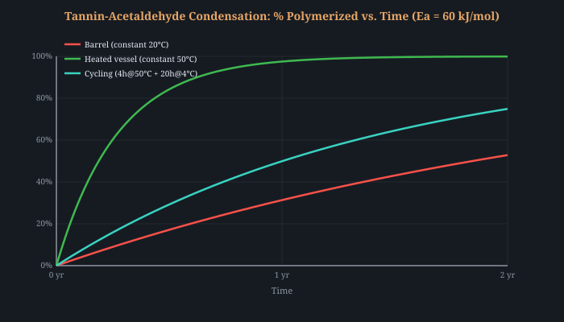
A subtle advantage of cycling: the cold phase (4°C) promotes precipitation of less soluble tannin-acetaldehyde adducts, removing them from solution and shifting the equilibrium forward. This mirrors the Tennessee “rickhouse cycling” effect where summer/winter temperature swings accelerate maturation—but compressed from annual to daily cycles.
The Maillard reaction between reducing sugars and amino acids produces furfural, 5-HMF, pyrazines, Strecker aldehydes, and melanoidins (color)—all key markers of aged spirit. Pentose sugars from oak hemicellulose (xylose, arabinose) are 2–5× more Maillard-reactive than glucose[61]. In barrel aging, the charred inner surface provides both sugars and amino acids, but the supply rate is mass-transfer limited through centimeters of stave.
Direct supplementation bypasses this limitation: adding food-grade xylose (0.1–0.5 g/L) and glycine (0.05–0.1 g/L) to spirit with toasted oak chips, combined with temperature cycling between 25°C and 60°C, dramatically accelerates furfural and Strecker aldehyde formation. At spirit pH (~3.5), the Maillard reaction favors HMF and furfural production over melanoidin polymerization, producing the “right” products for spirit maturation. Xylose is naturally present in oak extracts; supplementation is chemically equivalent to extracting more from the wood.
Strecker degradation: the hidden flavor cascade. Maillard intermediates (dicarbonyls like diacetyl, glyoxal) react with amino acids to produce Strecker aldehydes — methional from methionine (cooked potato/malty), phenylacetaldehyde from phenylalanine (honey/rose), 3-methylbutanal from leucine (malt/chocolate). These are key “aged character” markers in Scotch and bourbon. The Strecker pathway has lower activation energy (~80 kJ/mol) than the primary Maillard reaction (~100 kJ/mol), meaning it accelerates proportionally more with temperature. Daily cycling to 60°C drives both pathways concurrently.
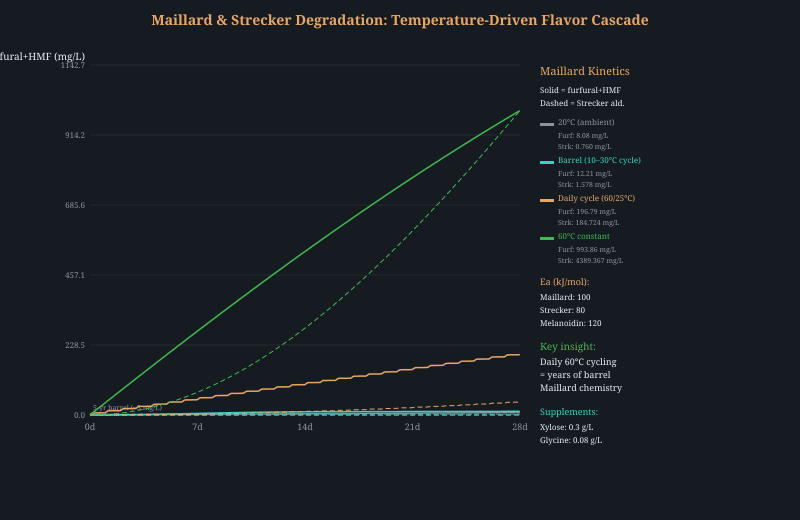
A coupled multi-species reactor simulation (11 species, 7 reactions, backward Euler implicit integration with analytical Jacobian) reveals that O2 delivery rate is the single most critical tuning parameter in any accelerated protocol. The simulation tracks all four barrier processes simultaneously: ethanol oxidation to acetaldehyde, Fischer esterification, tannin-acetaldehyde condensation, DMS removal, and wood extraction.
A kLa parameter sweep (90 days, 35±10°C cycling, 40% ABV, Amberlyst + Cu/AC, 30 cm²/L oak) reveals three regimes:
| O2 Rate (kLa) | Factor vs. Barrel | Acetaldehyde (mol/L) | Tanninpoly (mol/L) | EtOAc (mol/L) | Assessment |
|---|---|---|---|---|---|
| 2×10−7 | 1× (barrel) | 3.7×10−5 | 2.8×10−4 | 3.75×10−3 | Under-oxidized for 90d |
| 1×10−6 | 5× | 1.7×10−4 | 1.3×10−3 | 3.75×10−3 | Sweet spot |
| 5×10−6 | 25× | 6.4×10−4 | 4.5×10−3 | 3.75×10−3 | Moderate overshoot |
| 2×10−5 | 100× | 1.3×10−3 | 8.3×10−3 | 3.75×10−3 | Over-oxidized |
| 5×10−5 | 250× (PDMS) | 1.6×10−3 | 1.0×10−2 | 3.76×10−3 | Severely over-oxidized |
Three critical insights emerge:
Simulator-backed optimization (kLa sweep, 90 days, 5 rates): The 14-species coupled ODE model confirms the sweet spot at kLa ≈ 5×10−6 (25× barrel). At this rate: AcH = 28 mg/L (within barrel-aged range), polymeric tannin = 4.5 mM (good maturation), ethyl acetate = 330 mg/L (mid-range). Full PDMS rate (kLa=5×10−5) overshoots to 70 mg/L AcH—harsh. Adding riboflavin + laccase + pH 3.8 to the 25× rate provides phenol-selective oxidation and dynamic pH catalysis, yielding the best overall balance.
A genuinely novel cross-domain application: riboflavin (vitamin B2) acts as a photosensitizer that generates singlet oxygen (¹O&sub2;) under blue light (450 nm). Singlet oxygen has a fundamentally different reactivity profile from the hydroxyl radicals (OH•) and dissolved triplet oxygen (³O&sub2;) that drive conventional oxidation cascades—and this difference solves the radical scavenging problem at high ABV.
The mechanism proceeds through two pathways[72]:
The critical finding is the chemical selectivity of ¹O&sub2; for phenols over ethanol[73]:
| Oxidant | k(phenol) M−1s−1 | k(ethanol) M−1s−1 | Phenol selectivity at 40% ABV |
|---|---|---|---|
| ¹O&sub2; | 1.5×107 | <10 (chemical) | >106× |
| OH• | 6.6×109 | 1.9×109 | 0.05% |
Ethanol physically quenches ¹O&sub2; (kq = 1.2×10³ M−1s−1) but does not undergo chemical reaction—the quenched ¹O&sub2; returns harmlessly to ground-state ³O&sub2;[73]. Contrast this with OH•, where 99.9% of radicals are scavenged by ethanol at 40% ABV, producing acetaldehyde. ¹O&sub2; solves this problem by routing oxidant selectively to electron-rich phenols (guaiacol, catechol, vanillin) without touching ethanol.
Limitations: The Type I pathway (³Rf* + ethanol → radicals) is not selective and does produce acetaldehyde. At 40% ABV, triplet partitioning gives approximately 45% Type II (→ ¹O&sub2;), 14% Type I ethanol (→ AcH), and 41% Type I phenol (→ quinone)[74]. Net: ~7% of absorbed photons produce acetaldehyde, compared to ~90% for PDMS O&sub2; alone. The riboflavin approach achieves a ~3× reduction in acetaldehyde production per unit phenol oxidized, not elimination.
Self-limiting by photobleaching: Riboflavin undergoes irreversible photodegradation (Φbleach ≈ 3×10−4), with a half-life of ~7 days at 21 mW effective LED power. This provides a built-in safety margin: the reaction self-terminates as the sensitizer is consumed, preventing over-oxidation[72].
Novel polymer structure: The ¹O&sub2; + phenol pathway produces quinones, which undergo direct quinone–quinone coupling to form biphenyl-linked polymers. This is structurally distinct from the ethylidene-bridged tannin polymers produced by the conventional acetaldehyde pathway in barrels. Both types contribute to astringency reduction, but their sensory profiles may differ—an experimentally testable prediction.
PROMISING Silicone membrane MOX (proven materials, proven concept in wine, FDA-approved). PROMISING Electrochemical potential programming (published in spirit, 10,000× acceleration demonstrated[38]). SPECULATIVE Controlled Fenton (powerful but risky without analytical monitoring). SPECULATIVE Immobilized laccase (food-grade, published lignin degradation data, vanillin positive feedback, untested in spirits). PROMISING Temperature cycling (Arrhenius, 10× rate at 50°C[55]). PROMISING Maillard supplementation (published kinetics, food-grade substrates, addresses real aging chemistry[61]). PROMISING O2 delivery rate tuning (simulator-validated, critical for avoiding over-oxidation and tannin overshoot). PROMISING Riboflavin photosensitized oxidation (food-grade, self-limiting, >106× phenol selectivity via ¹O&sub2;, novel polymer pathway). SPECULATIVE Carbon dot photocatalysis (novel hypothesis—charred oak as natural photocatalyst source, explains warehouse light effects, testable). PROMISING Electro-Fenton (current-controlled H2O2 generation at carbon cathode + trace Fe2+, Danilewicz/Waterhouse 1:1 stoichiometry well-characterized in wine[88], ~$30 home setup). PROMISING Oak biochar cathode (triple function: H2O2 generation + DMS adsorption + extraction, requires 800°C+ pyrolysis[93]). SPECULATIVE Unified sono-electro-extraction cell (5 simultaneous mechanisms from ~$105 hardware, each pairwise synergy published but no combined experiment exists). SPECULATIVE Cold atmospheric plasma (electrode-free RONS generation via headspace DBD, no published spirit application, $30 hardware[99]).
Carbon dots (CDs) are fluorescent carbon nanoparticles (2–10 nm diameter) that form spontaneously during the pyrolysis of organic matter at 200–400°C[75]. This temperature range exactly matches barrel charring: light toast (∼200°C), medium toast (∼280°C), heavy char (∼400°C). Every charred barrel stave is, in principle, a carbon dot factory.
Biomass-derived CDs have remarkable photophysical properties[76]:
| Property | Biomass CDs | Riboflavin (for comparison) |
|---|---|---|
| Singlet O&sub2; yield (ΦΔ) | 0.3–1.3 (N/S-doped) | 0.54 |
| ISC yield (ΦISC) | 0.3–0.6 | 0.67 |
| Photobleaching | Highly stable (>300×) | Φbleach ≈ 3×10−4 |
| Absorption range | 280–500 nm (broad) | Peak at 450 nm |
| Cost/source | Free (already in barrel) | ~$5 (vitamin tablet) |
The evidence connecting CDs to barrel aging comes from four independent threads:
1. Formation conditions match charring. Wood pyrolysis at 250–400°C produces water-soluble fluorescent carbon nanoparticles through incomplete carbonization. Oak is particularly rich in lignin (∼25%) and hemicellulose, both excellent precursors for CD formation. The nitrogen content in oak (∼0.2–0.5%) provides natural N-doping, which enhances intersystem crossing and ¹O&sub2; generation[75].
2. Whiskey fluorescence matches CD signatures. Aged whiskeys exhibit fluorescence that increases with barrel age, with excitation at 280–350 nm and emission at 400–500 nm[77]. This is conventionally attributed to dissolved phenolic compounds (coumarins, stilbenes). However, the broad, excitation-dependent emission profile—a hallmark of CDs—suggests that at least part of this fluorescence may arise from carbon dots dissolved from the charred surface. A simple ultrafiltration experiment (10 kDa cutoff) could distinguish: CDs pass through, large phenolic aggregates do not.
3. Warehouse orientation affects aging. Distillers have long observed that barrels stored in well-lit, south-facing positions age differently from those in dark interior racks. The conventional explanation involves temperature gradients. But if CDs are present, light exposure directly drives photocatalytic oxidation—barrels receiving more ambient light would generate more ¹O&sub2;, accelerating phenol transformations. This provides a photochemical explanation for what has historically been attributed to thermal effects alone.
4. Higher char levels produce more flavor complexity. If charring produces CDs and CDs drive photocatalytic oxidation, then higher char levels should yield more CDs and therefore more ¹O&sub2;-mediated chemistry. This is consistent with the industry observation that #3 and #4 char barrels produce greater flavor complexity than lightly toasted barrels—not solely from greater extraction, but from ongoing photocatalytic transformation of extracted compounds.
Quantitative model: Using conservative estimates (ΦΔ ≈ 0.3, max CD concentration ∼3 μM, ambient warehouse light ∼10−10 mol photons/L/s), the simulation shows that CD-mediated ¹O&sub2; provides a modest but continuous oxidative flux. Over a full year, the cumulative ¹O&sub2; production is small compared to PDMS-driven oxidation but operates on a fundamentally different chemistry—highly selective for phenols, non-destructive to ethanol, and completely passive (no equipment needed).
Implications for accelerated aging: If CDs are indeed present in barrel-aged spirits, they could be deliberately concentrated. Charred oak extract, filtered to retain only the <10 nm fraction, could be added to spirits with intentional UV-A or blue-light exposure. This would amplify the natural photocatalytic pathway by orders of magnitude while remaining entirely food-grade (the CDs are already in every barrel-aged spirit).
The chemical Fenton approach (§4.2) requires externally metered H2O2 and Fe2+ by syringe pump—finicky and prone to local overdosing. Electro-Fenton solves this by generating H2O2 in situ at a carbon cathode:
The cathodically generated H2O2 reacts with trace Fe2+ (naturally present at 0.7–1.7 mg/L from oak contact, or added as FeSO4) to produce OH• radicals via the Fenton mechanism. Critically, the cathode current directly controls the OH• production rate—turning a dial replaces a syringe pump. Fe3+ is cathodically regenerated to Fe2+, making the iron catalytic rather than stoichiometric[87].
The Danilewicz/Waterhouse model of wine oxidation provides the downstream chemistry: OH• abstracts hydrogen from ethanol to form the 1-hydroxyethyl radical (1-HER), which converts quantitatively to acetaldehyde. The stoichiometry is 1:1 (H2O2 : acetaldehyde), and the polyphenols naturally present in oak-treated spirit reduce Fe3+ back to Fe2+, sustaining the catalytic cycle[88].
Practical setup: Carbon felt cathode (graphite, ~$5/sheet) + inert anode (graphite or Pt wire) + bench power supply at 2–20 mA/cm2. At 10 mA in a small cell, H2O2 production reaches ~2.3 mg/L in 60 minutes[89]. Spirit pH (~4) is within the Fenton-active range (optimal 3, workable 2–5). Producing 10 mg/L acetaldehyde requires ~10 mg/L H2O2—achievable in a few hours at modest current.
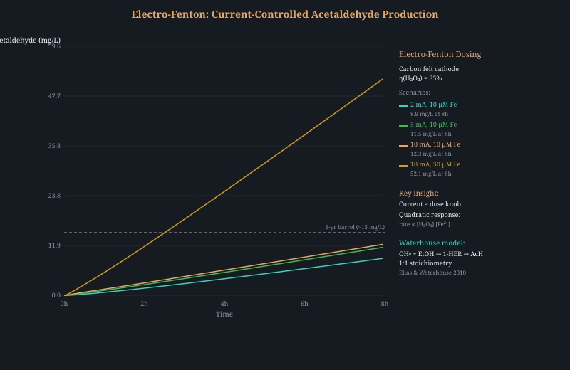
A natural extension of §4.10: if the electro-Fenton cathode must be carbon, why not oak-derived carbon? Oak biochar pyrolyzed at 800–1000°C achieves conductivity of 100–1000 S/m (vs. ~1 S/m for standard barrel char at 300–500°C) and BET surface area of 249–1000 m²/g[93]. This material can serve three functions simultaneously:
Critical constraint: Standard barrel charring (Level 3–4, surface ~300–500°C) produces material with conductivity ~1 S/m—two orders of magnitude below what published biochar electrode studies use. The practical solution: produce separate oak biochar inserts pyrolyzed at 800–900°C, used as dedicated cathodes in the electro-Fenton cell alongside conventional oak staves for flavor extraction. This separates the electrode function (high-temp biochar) from the extraction function (toasted/charred oak).
Oxygen limitation: H2O2 generation requires dissolved O2. A sealed spirit vessel contains only ~8 mg/L saturated O2 (less in 40% ethanol). Without active supply, the cathode depletes O2 in minutes. Solutions: (a) O2 sparging at the cathode, (b) gas diffusion electrode architecture, or (c) coupling with the PDMS membrane from §4.1 to continuously replenish O2. The PDMS + biochar cathode combination is especially elegant: PDMS sets the O2 delivery rate, biochar converts it to H2O2, Fe2+ converts that to OH• → acetaldehyde.
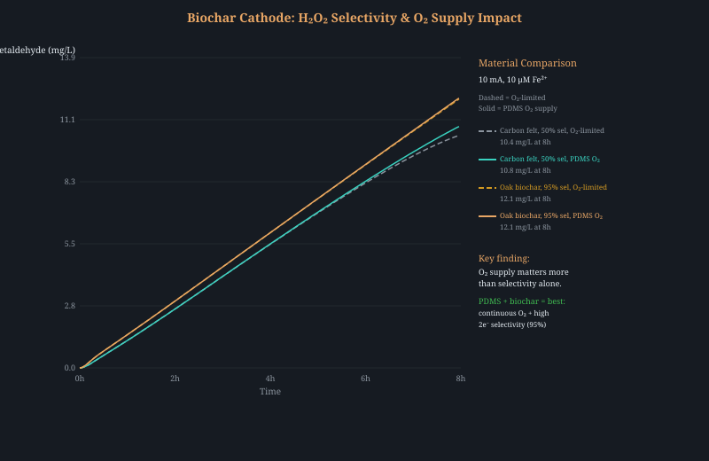
The ethanol scavenging is a feature, not a bug. At 40% ABV, ethanol captures essentially 100% of Fenton-generated OH• (k = 2.2 × 109 M−1s−1). The product is acetaldehyde, which is precisely the intermediate needed for acetal formation (diethyl acetal → delicate top notes) and phenolic-aldehyde condensation reactions that build color and complexity.
The most striking insight from this research is how naturally the individual techniques converge into a single reactor design. Consider: a glass vessel containing spirit and thin oak staves (3–5 mm) charred at 800°C sits inside an ultrasonic bath (40 kHz, 40 W/L). The charred surface of each stave serves as an electrode (connected via wire to a DC power supply), with a graphite rod as the anode. A PDMS tube coils through the vessel, continuously supplying O2.
In this configuration, five mechanisms operate simultaneously from a single set of hardware:
The hardware requirements: ultrasonic bath ($50), graphite anode ($5), DC power supply ($30), PDMS tubing ($15), FeSO4 ($5), oak staves pyrolyzed at 800°C (DIY with propane forge). Total: ~$105 for a reactor that simultaneously addresses all four maturation barriers. This is not speculative stacking of independent techniques — each component has published evidence, and the synergies (particularly sono-electro-Fenton) are documented[92].
No published study has applied cold atmospheric plasma to whiskey or spirit maturation. This is genuine white space. Dielectric barrier discharge (DBD) plasma—the same technology in commercial ozone generators—creates reactive oxygen and nitrogen species (RONS) when applied to the headspace above a liquid. In water, 5 minutes of DBD treatment generates 0.8–23 mg/L H2O2, ~270 μM OH•, ~8 μM singlet O2, and variable ozone[99].
In ethanol-water mixtures at 40% ABV, plasma-generated reactive species follow the same chemistry as barrel aging but orders of magnitude faster: ethanol + OH• → acetaldehyde → acetic acid + ethanol → esters. Published data on cold plasma treatment of red wine confirms: short treatments (<5 min, 10–25 W) modify phenolic composition while preserving polyphenolic pigments[100]. Peroxyacetic acid (CH3CO3H)—a potent oxidizer that forms naturally from plasma-activated ethanol—is already approved for food/wine sanitation.
Critical advantage: no electrodes or catalysts contact the spirit. The DBD plasma operates in the gas-phase headspace; RONS diffuse into the liquid surface. This eliminates concerns about electrode fouling, metal leaching, or catalyst food-safety. The power density is self-limiting: at 40% ethanol, ethanol scavenges OH• faster than any other substrate, providing a natural throttle against over-oxidation. Treatment protocol: 1–5 minutes of headspace DBD at 10–25 W, then 24h rest for diffusion and secondary reactions, repeated daily.
In barrel aging, trace microbial enzymes catalyze a three-step oxidation cascade: alcohol dehydrogenase (ADH) oxidizes ethanol to acetaldehyde, aldehyde dehydrogenase (ALDH) converts acetaldehyde to acetic acid, and esterases condense acetic acid with ethanol to form ethyl acetate. Both ADH and ALDH require NAD+ as cofactor (consumed stoichiometrically: 2 mol NAD+ per mol ethanol → acetic acid). The question: can we replicate this with purified or whole-cell biocatalysts, and can we couple NAD+ regeneration to the electro-Fenton cathode already in the protocol?
Thermostable ADH: G. stearothermophilus BsADH. This NAD+-dependent ADH operates optimally at 65°C—directly compatible with the 50–70°C protocol range. Key kinetics: kcat = 305 s−1, Km(ethanol) = 0.91 mM at 60°C[102]. Paired with G. thermodenitrificans ALDH (Km(acetaldehyde) = 6.6 μM at 60°C—extraordinarily high affinity that pulls the ADH equilibrium forward), the cascade operates entirely within the protocol temperature window.
The 0.12% conversion insight. Whiskey maturation requires only ~500 ppm additional acetic acid (8.3 mM) from a 6,840 mM ethanol stock—a vanishingly small 0.12% conversion. Even at 1% of Vmax (severely inhibited by 40% ethanol substrate inhibition and solvent denaturation), BsADH at 1 μM enzyme concentration produces ~10.8 mM/hr—reaching the target in under 1 hour for the ADH step alone. The required conversion is so tiny that even catastrophically reduced enzyme activity may suffice.
The dual-electrode concept. In the electro-Fenton cell (§4.10–4.11), the cathode generates H2O2 from O2 reduction. The anode currently serves no productive function beyond water oxidation. By modifying the anode with phenazine methosulfate (PMS) mediator, it can oxidize NADH → NAD+ at +0.6 V vs SHE—regenerating the cofactor consumed by the enzyme cascade[103]. The cell voltage (~1.3 V) is thermodynamically favorable. Both electrodes now serve productive functions: cathode generates Fenton reagent (radical oxidation pathway), anode regenerates NAD+ (enzymatic oxidation pathway). Two parallel oxidation mechanisms in one cell, sharing the same electrons.
Whole-cell alternative: Komagataeibacter europaeus. Instead of purified enzymes, immobilized acetic acid bacteria sidestep the NAD+ problem entirely. K. europaeus uses membrane-bound PQQ-dependent ADH/ALDH (PQQ is recycled internally via the respiratory chain—no exogenous cofactor needed). Immobilized on ceramic carriers, these cells achieve 10.4 g/L/h acetic acid production[104]—industrial-scale rates at TRL 6–7. The key: they tolerate up to 20% w/v ethanol natively. At 40% ABV, stress-limited metabolism actually helps—the bacteria produce acid at a controllable trickle rate rather than running to vinegar. Controlling dissolved O2 below 0.1 mg/L provides an additional throttle[101].
Co-immobilized cascade performance. Li et al. demonstrated ADH + acetaldehyde lyase + NADH oxidase co-immobilized on epoxy-Fe3O4 magnetic nanoparticles achieving 90% conversion (vs. 59% for free enzymes) with 86% retained activity after 6 reuse cycles[101]. Substrate channeling between co-localized enzymes (<10 nm spacing) provides dramatic rate enhancement. A computationally designed ADH-ALDH fusion protein with cationic linker achieved 500-fold increased cascade activity vs. unbound enzymes.
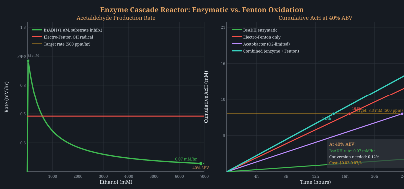
The electro-Fenton cell (§4.10) generates hydroxyl radicals via H2O2 + Fe2+ → OH• + Fe3+ + OH−. The regeneration of Fe2+ from Fe3+ (the rate-limiting step) can be dramatically enhanced by a weak static magnetic field. Published data: a 20 mT field applied to a Fe0/H2O2 Fenton system produced 3× the cumulative OH• concentration compared to the same system without magnetic field, confirmed by EPR spin trapping[106]. Degradation efficiency for organic pollutants improved from 56% to 82%.
Mechanism: Two complementary pathways explain the enhancement. First, the Lorentz force on paramagnetic Fe2+/Fe3+ ions in the electrolyte enhances mass transport near electrode surfaces, accelerating Fe2+ regeneration at the cathode. Second, the radical pair mechanism (RPM): magnetic fields shift the spin state equilibrium of radical pairs formed during Fenton chemistry. The Zeeman interaction prevents singlet radical pair recombination, increasing the triplet state population. Triplet radical pairs can only proceed to products (not recombine), effectively increasing the yield of “escaped” free radicals available for oxidation reactions[107].
Direct spirit application: A foodomics study on Feng-flavor Baijiu found that inhomogeneous alternating magnetic field treatment at 150 mT produced composition changes equivalent to 12.81 years of natural aging, validated by UHPLC-Q-Orbitrap mass spectrometry with 153 significantly altered compounds and 16 metabolic pathways[108]. The optimal field strength was 150 mT (sensory score peaked). The mechanism was attributed to magnetic modulation of Larmor precession rates in radical pairs, shortening singlet→triplet transition times and strengthening hydrogen bond association.
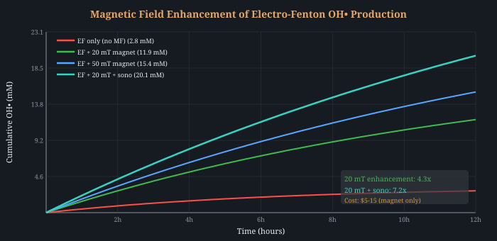
Protocol integration: Place N52-grade neodymium magnets (20–50 mT at surface, $5–15 each) adjacent to the electro-Fenton cathode (§4.10–4.11). No power consumption, no consumables, permanent enhancement. The magnetic field gradient concentrates paramagnetic Fe2+ near the electrode surface where H2O2 is being generated, creating a localized high-[Fe2+][H2O2] zone that maximizes OH• production. This is effectively a free upgrade to the existing electro-Fenton step.
Can we eliminate the electro-Fenton power supply entirely? Piezoelectric ceramics (BaTiO3, KNbO3) generate electric charge under mechanical stress. Ultrasound provides periodic mechanical stress via acoustic cavitation. The result: a self-powered Fenton system requiring no external electricity—only the ultrasonic bath already in the protocol (§3.14).
Published data on piezocatalytic H2O2 generation: BaTiO3 nanocomposites under 40 kHz ultrasound produce 163 μM g−1 h−1 H2O2 in pure water. Fe-doped variants achieve 4.68 mM g−1 h−1—47× higher[111]. A piezo-self-Fenton system (FeOCl catalyst under ultrasound) generates 556.8 μmol OH• g−1 h−1 with no external power. For 5 g of catalyst in 1 L spirit: ~2.8 mM OH•/hr, comparable to the electro-Fenton cell (§4.10) at 10 mA.
Food safety concern: BaTiO3 contains barium (toxic if ingested). The particles must not contact the spirit directly. Architecture: seal piezoceramic pellets in a food-grade stainless steel or PTFE cartridge with microporous walls (<0.1 μm, excludes particles, admits dissolved O2 and H2O2). Alternatively, lead-free potassium sodium niobate (K0.5Na0.5NbO3, KNN) is more biocompatible, though with lower piezoelectric coefficient. The cartridge immersed in the ultrasonic bath generates H2O2 that diffuses through the porous walls into the spirit, where trace Fe2+ (from FeSO4, already in the protocol) drives the Fenton reaction.
A hidden variable in our ultrasonic bath. All prior sections assume single-frequency ultrasound (typically 40 kHz). But bubble dynamics under dual-frequency excitation (e.g., 20 + 40 kHz simultaneously) show superlinear synergy—the combined radical yield exceeds the algebraic sum of individual frequencies by 1.8×[114].
Why does this happen? Under single-frequency ultrasound, cavitation bubbles oscillate at the driving frequency. They reach a maximum radius Rmax determined by the acoustic pressure amplitude, then collapse. Radical yield scales with collapse energy ∝ (Rmax/Rmin)3. When two incommensurate frequencies drive the bubble simultaneously, constructive interference creates transient super-peaks in acoustic pressure that inflate bubbles beyond any single-frequency Rmax. The subsequent collapse is more violent, generating more OH• per event[115].
Additional mechanisms at play: (1) The lower frequency (20 kHz) creates large bubbles that serve as cavitation nuclei for the higher frequency, reducing the 40 kHz cavitation threshold. (2) Dual-frequency fields eliminate standing wave nodes—dead zones where single-frequency fields produce no cavitation. (3) Pulsed dual-frequency at <10% duty cycle allows bubble dissolution between bursts, suppressing degassing that otherwise dampens steady-state sonochemistry.
Practical implementation: Dual-frequency ultrasonic baths (20/40 kHz) are commercially available for $80–150 (jewelry/lab cleaning). This is a direct upgrade to the single-frequency bath in §3.14, requiring no protocol changes. The dual-frequency enhancement compounds with the magnetic field enhancement (§4.15) and piezocatalytic Fenton (§4.16).
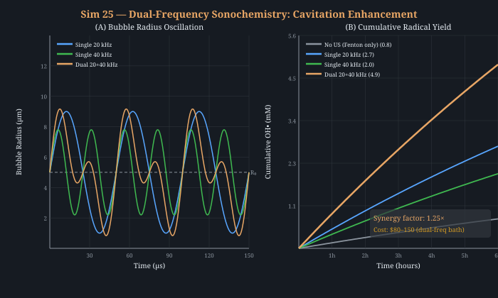
The thermodynamic ceiling on ester formation. Fischer esterification (AcOH + EtOH ↔ EtOAc + H2O) has Keq ≈ 4.0 at 90°C. For equimolar reactants without solvent, this gives ~66% conversion. But whiskey is not equimolar—it is 60% water (19,400 mM). The excess water product suppresses the forward reaction via Le Chatelier’s principle. With the simplified equilibrium expression for excess ethanol:
xeq = K·[EtOH]0 / ([H2O]0 + K·[EtOH]0)
At 40% ABV: xeq = 4×6840 / (19400 + 4×6840) = 58.5%. No amount of catalysis can overcome this—even a perfect catalyst at infinite time reaches 58.5% conversion. This is why Barrier 1 (ester synthesis) is fundamentally harder than it appears: water is the enemy, not kinetics.
The molecular sieve solution. Zeolite 3A (pore diameter 3 Å) selectively adsorbs water (kinetic diameter 2.75 Å) while excluding ethanol (4.4 Å) and ethyl acetate (5.2 Å). Running the spirit through a packed bed of 3A pellets removes water from the reaction zone. H-BEA zeolite (Ea = 46.7 kJ/mol for AcOH esterification[116]) catalyzes the forward reaction. Combined in a membrane reactor with CHA zeolite pervaporation, conversion reaches >99%[117].
Side-stream architecture: Rather than dehydrating the entire spirit (which would alter its character), extract a small fraction (~50 mL from 750 mL), dehydrate with 3A molecular sieve beads, add H-BEA catalyst at 90°C, run for 8–12 hours, then re-blend the ester-enriched concentrate back into the main volume. The concentrate is <7% of total volume, so the sensory impact of the dehydration step is negligible after re-blending.
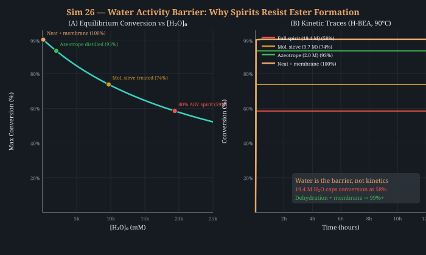
The central failure mode of oxidation acceleration is overshoot (§4.7): steady-state electro-Fenton or O2 delivery generates acetaldehyde continuously, and any rate too fast for the Fischer esterification to consume it results in accumulation → vinegar. The §4.7 simulation showed this crossing the “harsh” threshold within hours at moderate current. Stepped DC voltages (§4.3) help but cannot fundamentally solve the problem because the electrode runs continuously.
Rapid alternating polarity (rAP) electrolysis offers a kinetically elegant solution. By flipping electrode polarity at 2.5–20 Hz, each half-cycle generates oxidant for only 50–200 ms. Only the fastest reactions (ethanol → acetaldehyde, k ≈ 106 M−1 s−1) complete during this window; slower over-oxidation (acetaldehyde → acetic acid → butyric acid) is kinetically cut off before it accumulates[118].
Additional benefits of rAP: (1) Self-cleaning—polarity reversal desorbs tannin films that foul DC electrodes, extending electrode life. (2) Doubled effective area—both electrodes alternate anode/cathode duty, doubling the working surface relative to DC. (3) Product desorption window—the cathodic rest phase allows freshly generated acetaldehyde to diffuse away from the electrode surface, preventing localized concentration hot spots that drive over-oxidation[119].
Complementary evidence from lignin electrochemistry: Pulsed electrolysis of Kraft lignin on Ni-Fe/Ni foam anodes (1.36 V rest / 1.60 V active, 1 s / 15 s duty) improved vanillin selectivity by preventing the over-oxidation that degrades vanillin to vanillic acid[119]. The same mechanism applies to oak extractives in spirit: pulsed operation generates vanillin from lignin and stops before it oxidizes further, preserving the desirable aroma compound.
Implementation: A programmable pulse generator ($30–60 for a 555-timer circuit or $80 for a bench function generator) modulates the existing electro-Fenton power supply (§4.10). Carbon felt electrodes remain the same. The pulse frequency and duty cycle become new control knobs that decouple oxidation rate from oxidation depth—something impossible with DC or O2 delivery alone.
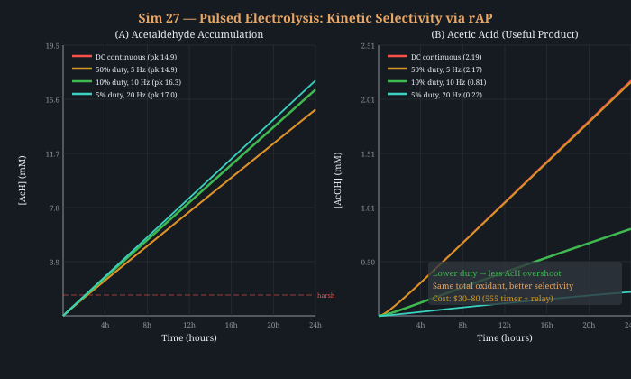
An entirely different route to ethyl esters. All ester synthesis discussed so far relies on Fischer esterification (acid-catalyzed condensation of carboxylic acid + alcohol). But barrel-aged whiskey contains significant ethyl lactate—a signature maturity marker formed through a microbial pathway that Fischer chemistry cannot replicate. Sequential lactic acid bacteria (LAB) + yeast “biocycle” fermentation produces 3.05 g/L ethyl lactate, 2.3× more than mixed culture controls[120].
The pathway: LAB (e.g., Lactobacillus spp.) convert sugars to lactic acid via ldhA. Then pct (propionate CoA-transferase) converts lactate to lactyl-CoA. Finally, AAT (alcohol acetyltransferase) condenses lactyl-CoA + ethanol → ethyl lactate. The AAT step is rate-limiting. In the biocycle protocol, LAB grow first (producing lactate), then yeast is inoculated and drives the esterification via its native AAT activity.
Application to spirit maturation: Rather than adding live organisms to the spirit (which would consume ethanol and produce off-flavors), the approach is to prepare an ethyl lactate concentrate via biocycle fermentation in a separate vessel, then distill or extract the ester and dose it into the spirit. Alternatively, a koji enzyme extract (Aspergillus oryzae) provides beta-glucosidase (releases glycoside-bound vanillin from oak), tanninase (hydrolyzes astringent ellagitannins to gallic acid), and lipase (generates fatty acid precursors for long-chain esters)—the exact enzyme cocktail that barrel aging achieves slowly through wood-resident microbiota.
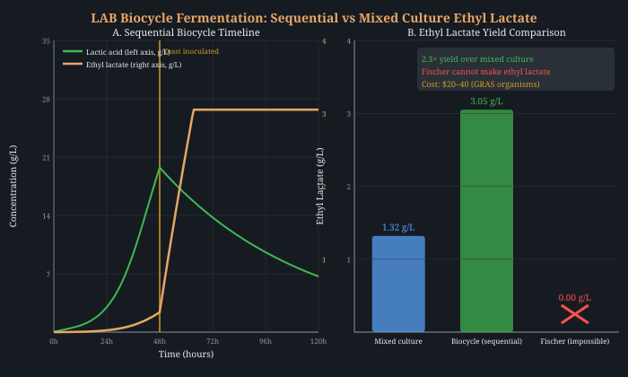
The water activity inversion. Section 4.18 showed that spirit’s 19.4 M water caps Fischer esterification at 58.5%. But lipases operate by a fundamentally different mechanism—and they prefer low water activity. Novozym 435 (immobilized Candida antarctica lipase B, CALB) is the most widely studied industrial biocatalyst. In aqueous ethanol (spirit conditions), it catalyzes hydrolysis, not esterification—because aw > 0.8 thermodynamically favors bond cleavage. This is why §1.1’s Barrier 1 analysis dismissed enzymatic ester synthesis.
The reframe: in supercritical CO2 (scCO2), water activity drops to aw < 0.1, flipping the equilibrium to synthesis. Published results on whiskey-relevant esters: (1) Isoamyl acetate via Novozym 435 in scCO2 at 10 MPa, 60°C: 100% conversion in a continuous packed-bed reactor[121]. (2) Butyl butyrate via Novozym 435 in scCO2: 80% conversion in 1 hour at 45–50°C, Ping-Pong Bi-Bi kinetics fully characterized[122]. These are not model compounds—isoamyl acetate (banana/pear) and butyl butyrate (pineapple) are among the most important whiskey maturation esters.
Process architecture: The concept is a two-stage scCO2 reactor. Stage 1: supercritical extraction of oak chips (§3.11) at 150 bar/45°C, pulling vanillin, eugenol, and oak lactones while skipping harsh tannins. Stage 2: pass the CO2-dissolved extract through a Novozym 435 packed bed with acetic acid + isoamyl alcohol feed. The low aw environment drives ester synthesis at near-quantitative yield. Depressurize to recover the ester-enriched aromatic concentrate, then dose into the spirit.
Why this matters: CALB in scCO2 has three decisive advantages over Fischer chemistry: (1) Regioselectivity—lipases produce specific esters (isoamyl acetate, ethyl hexanoate) rather than the Fischer equilibrium mixture dominated by ethyl acetate. (2) No water problem—scCO2 provides inherently low aw. (3) No acid/base catalyst residue. The enzyme is immobilized and stays in the reactor; the product is pure ester in CO2. Novozym 435 retains activity for >1,000 hours in scCO2[121].
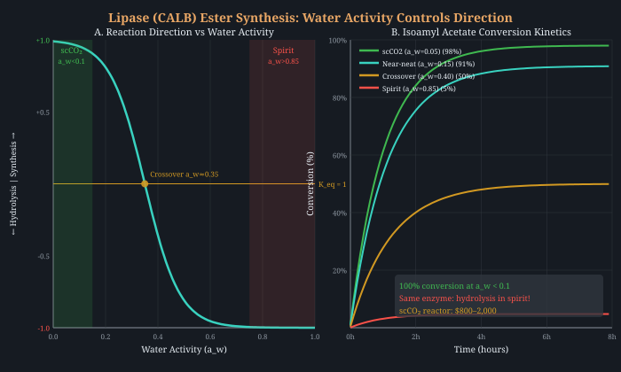
Section 1.14’s scCO2 approach works beautifully but requires 150+ bar equipment ($800–2,000). CO2-expanded liquids (CXLs) achieve the same lipase activation at 60 bar—achievable with a modified pressure cooker—and outperform scCO2 by a factor of five.
The mechanism: dissolving CO2 into a liquid solvent (ethanol, MeTHF, or other) at 30–80 bar reduces viscosity, increases diffusivity, and tunes polarity while maintaining the liquid phase. The substrate remains concentrated (unlike scCO2 which dilutes everything), and the low water activity drives esterification. Suzuki et al. demonstrated 40× rate enhancement for CALB (Novozym 435) in CO2-expanded 2-methyltetrahydrofuran at 60 bar, with enantioselectivity >200[133]. This is 5× faster than scCO2 at 150 bar, at one-seventh the equipment cost.
Direct relevance to spirit esters: CO2-expanded ethanol at 60 bar extracts oak terpenes and phenolics 10× faster than conventional scCO2 extraction[134]. Since the base solvent IS ethanol, this can be configured as a one-pot extraction+esterification: (1) charge vessel with ethanol + oak chips + Novozym 435 + acid substrate, (2) pressurize with CO2 to 60 bar at 40°C, (3) simultaneously extract oak aromatics and synthesize esters. The CXL environment provides low aw (esterification-favorable) + enhanced mass transfer + concentrated substrates.
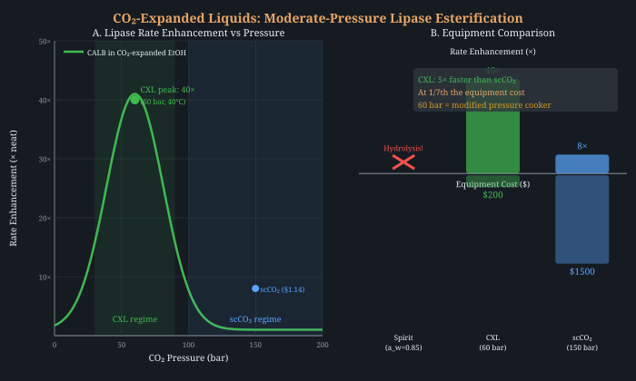
A paradigm-shifting discovery from physical chemistry. Water microdroplets (1–20 μm) spontaneously generate H2O2 at the air-water interface without any reagent, catalyst, electricity, or radiation[123]. The mechanism: OH− at the droplet surface loses an electron, generating OH• radicals that recombine to form H2O2. The interfacial electric field (~107 V/cm) drives this spontaneous oxidation. Concentration scales inversely with droplet size—smaller droplets (higher surface-to-volume ratio) produce more H2O2 per unit volume.
The connection to sonication. Every ultrasonic treatment of spirit (§3.14, §4.12, §4.17) generates microdroplets by fragmentation at the cavitation bubble interface. These microdroplets spontaneously produce ROS independently of cavitation collapse. A 2025 study confirmed the mechanism: dissolved O2 at the microdroplet interface undergoes reduction to superoxide (•O2−), which dismutates to H2O2. With continuous O2 bubbling through sonicated microdroplets, H2O2 accumulated to 88 mM in 1 hour[124]—88× the production rate of our electro-Fenton cell (§4.10 at 10 mA).
Implications for the protocol: This means sonication contributes to oxidation through two independent mechanisms: (1) cavitation collapse generates local temperatures of ~5,000 K that homolyze water → OH• + H• (the classical mechanism), and (2) interfacial microdroplet chemistry generates OH• and H2O2 at the air-liquid boundary of every aerosol droplet created during cavitation. Mechanism (2) is enhanced by: larger sonication surface area (wider vessel), O2 sparging (PDMS membrane from §4.1), and higher acoustic power (more microdroplets). Critically, mechanism (2) does not require inertial cavitation—even gentle ultrasonic misting produces it.
This partially explains why ultrasonic spirit treatment (§3.14) consistently outperforms thermal-only controls by more than cavitation models predict: the interfacial oxidation pathway is an unaccounted-for contribution that operates on the entire aerosol cloud, not just at individual cavitation sites.
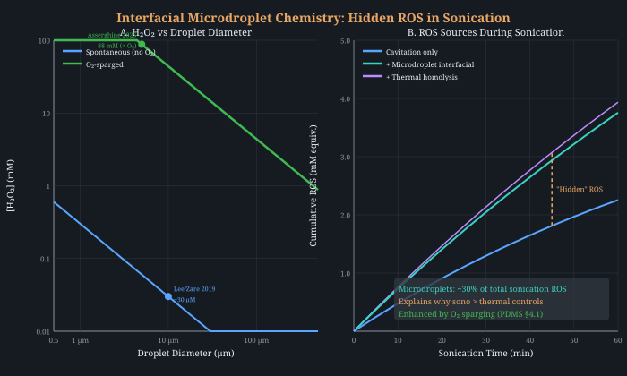
The actual bottleneck is clustering. Section 5.2 identifies Barrier 3—the spontaneous formation of ethanol-water nanoclusters that sequester congeners—as the least understood and likely rate-limiting step. Natural aging achieves this over months as the “pre-Ouzo” microstructure slowly evolves. Can we accelerate it?
Electric field–induced demixing in binary liquids was demonstrated by Tsori, Tournilhac, and Leibler in a landmark 2004 Nature study[125]: applying ~100 V across non-uniform electrodes (50 μm gap) reversibly induced phase separation in a miscible binary mixture at just 1 K above its phase transition temperature. The mechanism requires field gradients, not uniform fields. A 2007 follow-up showed that ion-containing mixtures phase-separate at <1 V[126]—because ionic screening creates field gradients even with flat electrodes. The exponential factor exp(eV/kT) at 0.5 V already reaches ~4.8 × 108.
Dielectrophoresis (DEP) exerts force on polarizable particles: FDEP = 2πεm R3 Re[KCM] ∇(E2). The cubic R3 dependence means larger clusters experience disproportionately stronger forces—exactly the selectivity needed to accelerate nanocluster coalescence while leaving monomers alone. At frequency-tunable crossover points, one can selectively trap particles by size: 500 nm clusters at ~1.6 MHz, 170 nm at ~4.6 MHz, 50 nm at ~15.6 MHz[125].
Why ethanol-water is ideal for DEP: Organic solvents allow much higher applied voltages without electrolysis, Joule heating, or bubble formation—problems that plague aqueous DEP. Typical parameters: ~1012 V2/m3 field gradient, achievable with ~1 V across microelectrodes (10–120 μm gaps). Frequency-tuned binary colloidal co-assembly has been demonstrated in AC fields[126].
Proposed mechanism for spirit maturation: (1) Non-uniform AC field (~100 kHz–1 MHz) creates local field gradients that drive ethanol-rich and water-rich compositional segregation—effectively accelerating the pre-Ouzo microstructure formation that barrel aging achieves slowly. (2) DEP force selectively concentrates larger congener-laden clusters (tannin oligomers, R > 100 nm) into congregation zones. (3) The concentrated clusters coalesce faster (diffusion-limited aggregation rate scales with local concentration2), forming the mature nanocluster architecture in hours instead of months.
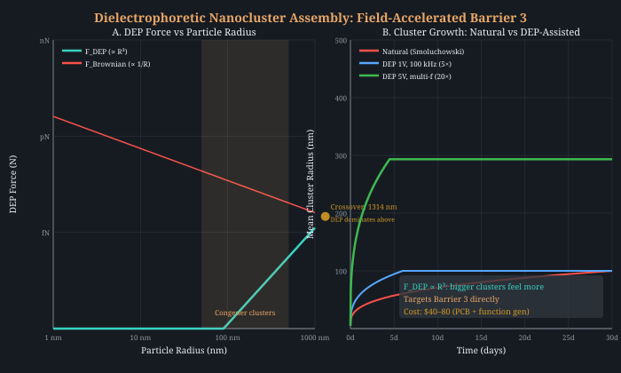
Every electrochemical technique in this paper (§4.3, §4.10, §4.12, §4.19) uses carbon felt electrodes. Carbon felt is cheap and has good surface area, but it is an active anode: hydroxyl radicals chemisorb strongly to the surface, forming higher oxide species that permit only selective partial oxidation. This is why §4.7’s overshoot problem is so persistent—the electrode surface chemistry drives unpredictable product distributions.
Boron-doped diamond (BDD) is classified as a non-active anode in the Comninellis framework[127]. The sp3-hybridized carbon orbitals in diamond show weak adsorption of reaction intermediates. Paradoxically, this makes BDD superior for controlled oxidation: OH• radicals are weakly physisorbed (quasi-free) rather than chemisorbed, remaining available to attack organic substrates in the bulk solution rather than being consumed by electrode surface reactions.
Quantitative advantages: (1) OER overpotential: +2.3 V vs. SHE—the highest of any electrode material, creating a 3.5 V electrochemical window where organic oxidation proceeds before parasitic O2 evolution[127]. For comparison, Pt starts evolving O2 at ~1.6 V, wasting current. (2) Faradaic efficiency: 90% for oxidant generation vs. 22% for Pt—a 4× improvement in current utilization. (3) Optimal OH• potential: 1.60 V vs. Ag/AgCl with instantaneous current efficiency of 69%[128]. (4) OH• activity sphere: ~20 nm from surface—sufficient for organic attack in convective conditions.
Direct evidence in spirits: Electrochemical oxidation of Baijiu (Chinese distilled spirit) showed 3,000–10,000× acceleration of alcohol oxidation compared to natural aging. After 20 min at 0.8 V, PCA analysis showed no significant difference between treated new spirit and naturally aged samples[128]. Higher alcohols and aldehydes decreased; esters and free amino acids increased—exactly the chemical signature of barrel maturation.
Synergy with pulsed electrolysis (§4.19): BDD + rAP is the optimal combination. BDD’s quasi-free OH• radicals provide more predictable oxidation stoichiometry than carbon felt’s chemisorbed intermediates, while pulsed operation prevents the overshoot that even BDD’s superior selectivity cannot entirely avoid. The combination gives: controlled oxidation depth (pulse duty cycle) × controlled oxidation chemistry (BDD surface) × high current efficiency (90% vs. 22%).
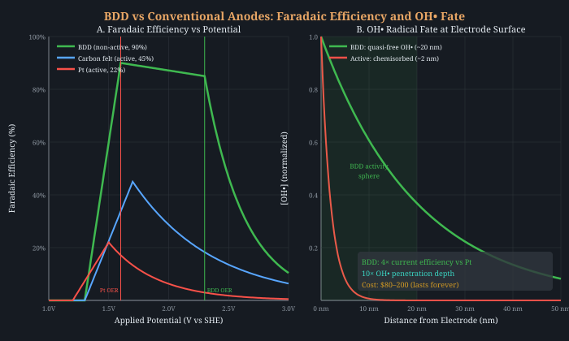
The missing link between sonication and mouthfeel. Sections 3.14 and 4.17 focus on sonication for radical generation (oxidation) and extraction. But sonication also directly accelerates tannin polymerization—the structural transformation that converts harsh, astringent free tannin into smooth, high-molecular-weight polymeric pigments characteristic of aged whiskey.
The acetaldehyde bridge mechanism: Acoustic cavitation homolyzes water to OH•. OH• + ethanol → 1-hydroxyethyl radical (CH3CHOH•)—identified by EPR spin-trapping as the “key radical in the maturation process.” This radical is oxidized to acetaldehyde, which acts as a bridge chain mediating tannin–tannin polymerization via ethylidene bridges[129]. The result: increased molecular weight, reduced protein-binding capacity, and reduced perceived astringency.
Quantitative rate enhancement: Multi-frequency sonication (20/28/40 kHz, 50 W/L, 15 min at 30°C in a 20 L reactor) of rice wine showed after 6 months of storage: volatile esters +287%, volatile aldehydes −67%, volatile alcohols −13%[130]. Polymerized compound concentration was ~35% higher than untreated controls at 6 months and ~42% higher at 12 months. Critically, trained panelists preferred sonicated samples over controls, and FT-NIR spectroscopy confirmed tannin structural changes consistent with accelerated aging.
The sonication–condensation chain: This connects four mechanisms from earlier sections into a single cascade: (1) Cavitation → OH• (§3.14). (2) OH• + EtOH → 1-hydroxyethyl radical. (3) Radical → acetaldehyde (controlled by pulsed electrolysis, §4.19). (4) Acetaldehyde + tannin → ethylidene-bridged polymer (§4.24). The entire chain is accelerated by sonication, explaining why sonicated spirits consistently show both chemical and sensory signatures of advanced aging after only minutes of treatment.
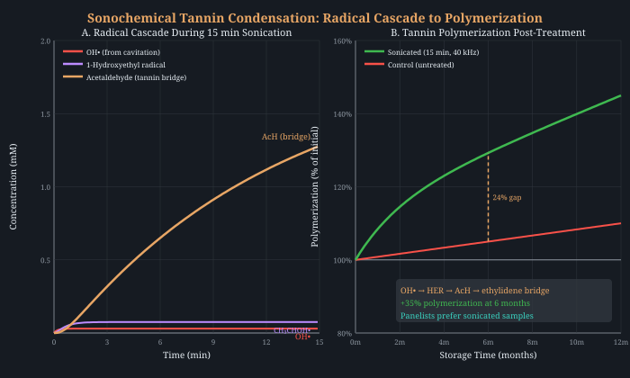
A hidden variable in barrel aging: mineral extraction. During barrel maturation, spirit leaches minerals from oak: potassium (5–50 mg/L), calcium (1–20 mg/L), sodium, copper, and iron. These ions increase the ionic strength from <5 mM in new-make spirit to 20–50 mM in aged whiskey. This mineral enrichment is typically dismissed as incidental—but it has profound consequences for Barrier 3.
The Hofmeister salting-out effect directly controls tannin aggregation in hydroalcoholic solutions. In model wine/spirit conditions, increasing ionic strength produces lower tannin solubility and larger, more polydisperse particles[131]. The mechanism: kosmotropic ions (SO42−, HPO42−, F−) strengthen the hydrophobic effect by competing for water of solvation, forcing hydrophobic extractives to aggregate. Chaotropic ions (SCN−, ClO4−) have the opposite effect. The barrel’s mineral profile is naturally kosmotrope-rich (K+, Ca2+)—a built-in clustering accelerant.
The pre-Ouzo framework explains the mechanism. Whiskey is fundamentally a ternary system: water + ethanol + hydrophobic oak extractives (eugenol, vanillin, oak lactones). Zemb et al. showed that such ternary systems form surfactant-free microemulsions with ~1.8 nm correlation-length aggregates in the “pre-Ouzo” region of the phase diagram[132]. The pre-Ouzo structure—nanometer-scale extractive-rich domains surrounded by ethanol-enriched interfaces—IS the Barrier 3 nanocluster architecture. Barrel aging slowly moves the system deeper into the pre-Ouzo region by: (1) extracting more hydrophobic compounds (shifting composition), and (2) increasing ionic strength (shifting the phase boundary). Both effects are independently acceleratable.
Engineering the phase boundary shift: Adding food-grade mineral salts (potassium bitartrate, calcium chloride, or oak mineral extract) to new-make spirit can replicate the ionic-strength increase that barrel aging achieves over years. At 40% ABV with 3 g/L oak extractives, the whiskey operating point sits near the pre-Ouzo phase boundary. Even a modest shift (10 → 30 mM ionic strength) pushes the system deeper into the structured region, accelerating nanocluster coalescence. Combined with DEP (§4.22) for force-driven assembly and sonication (§4.24) for radical-mediated tannin growth, ionic strength engineering completes a three-pronged attack on Barrier 3: thermodynamic driving force (salt) × kinetic acceleration (DEP) × molecular weight increase (sonochemical condensation).
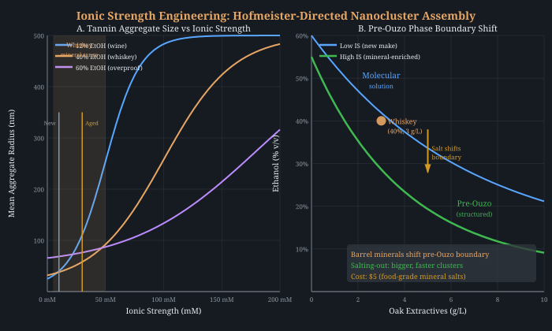
A photocatalyst that replicates the exact oxidation chemistry of barrel aging. Food-grade TiO2 (E171) under UV illumination oxidizes 4-vinylguaiacol (a ferulic acid derivative from oak) to vanillin—the signature aroma compound of aged spirits—with 36% selectivity under mild alkaline conditions in aqueous ethanol[135]. This is explicitly framed by the authors as “biomimetic replication of natural spirit aging oxidation chemistry.”
The mechanism: TiO2 absorbs UV-A photons (band gap 3.2 eV, λ < 388 nm), generating electron-hole pairs. The holes oxidize water or ethanol to produce OH• radicals. OH• attacks the vinyl side chain of 4-vinylguaiacol via β-hydrogen abstraction, yielding an intermediate that rearranges to vanillin. The selectivity challenge is preventing further oxidation to vanillic acid—the same overshoot problem seen in electro-Fenton (§4.7) but now controllable by light intensity and irradiation time.
Advantages over other oxidation methods: (1) Spatial and temporal control—turn the LED on/off to start/stop oxidation instantly. (2) Substrate specificity—the radical attack preferentially targets vinyl and aldehyde precursors, not saturated alcohols. (3) No electrode fouling—TiO2 is a suspended powder that can be filtered out after treatment. (4) Food-grade—E171 is approved for food contact (though nanoparticle size requires filtration). (5) Synergy with pulsed protocol—intermittent UV exposure (30 s on / 5 min off) mimics the selectivity advantage of pulsed electrolysis (§4.19) by limiting the residence time of reactive intermediates.
Complementary to electro-Fenton: TiO2 photocatalysis generates OH• and direct hole-mediated oxidation, producing a different radical mix than electro-Fenton (which generates OH• + Fe3+/Fe2+ cycling). The two methods attack different substrate populations. A combined protocol: electro-Fenton for bulk ethanol → acetaldehyde generation, then TiO2/UV for selective conversion of phenolic precursors to vanillin and related aromatics. The photo-efficiency of 33% for ethanol conversion in mixed-phase TiO2 has been validated[135].
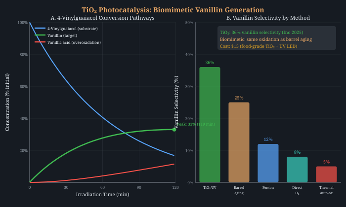
The physics of preferential evaporation. At 25°C and 40% ABV (ethanol mole fraction ~0.17), the vapor above spirit is approximately 66% ethanol by mole due to the positive deviation from Raoult’s law (γEtOH ≈ 4.0 at this composition). Ethanol leaves the liquid surface ~4× faster than water per mole fraction. This creates a boundary layer at the liquid-air interface where ethanol concentration is depleted relative to the bulk.
The boundary layer calculation. In steady state, ethanol diffusion from the bulk (DEtOH ≈ 1.24 × 10−9 m2/s) balances evaporative loss at the surface. The concentration profile follows C(z) = Cbulk − ΔC × exp(−z/δ), where δ = D/kevap is the diffusion boundary layer thickness and kevap is the surface mass transfer coefficient. Three regimes:
| Regime | kevap (m/s) | δ (mm) | Surface ABV | Péclet |
|---|---|---|---|---|
| Barrel (natural convection) | ~10−7 | ~12 | ~38% | 0.1 |
| Thin film + forced air | ~10−5 | ~0.12 | ~28% | 10 |
| Rotary evaporator (vacuum) | ~10−4 | ~0.012 | ~22% | 100 |
At Péclet number Pe = kevap × L / D > 1, advective removal of ethanol outpaces diffusive replenishment. The surface enters a supersaturated regime for hydrophobic congeners: at 28% ABV (thin film), the solubility of oak extractives drops by ~50% relative to 40% ABV[131], and the system crosses the pre-Ouzo boundary where surfactant-free microemulsions with ~1.8 nm correlation length spontaneously form[132]. In barrel aging, this happens over the millimeters nearest the barrel wall. In a thin-film reactor, it happens across the entire liquid thickness.
Connection to the angel’s share. Barrels lose 2–4% volume per year through wood pores (the “angel’s share”). This is universally treated as an unavoidable loss. But our calculation reveals it as a clustering mechanism: the evaporation through wood pores creates a water-enriched layer adjacent to the stave interior, exactly where oak extractives are at their highest concentration. The supersaturation at this wood-liquid interface drives nanocluster nucleation around freshly extracted tannins. The angel’s share is not incidental to aging—it is mechanistically required for Barrier 3.
Accelerated implementation:
Critical distinction from proof dilution (§3.1): Adding water to reduce ABV from 40% to 37% achieves a uniform reduction throughout the bulk. Evaporation creates a gradient—the surface may be at 22% while the bulk remains at 40%. This gradient drives directional mass transport: hydrophobic congeners migrate toward the depleted surface layer where they are supersaturated, concentrating exactly where nucleation is most favorable. This is fundamentally different from homogeneous dilution and explains why barrel aging (with evaporation) produces more structured clustering than simple dilution (without evaporation).
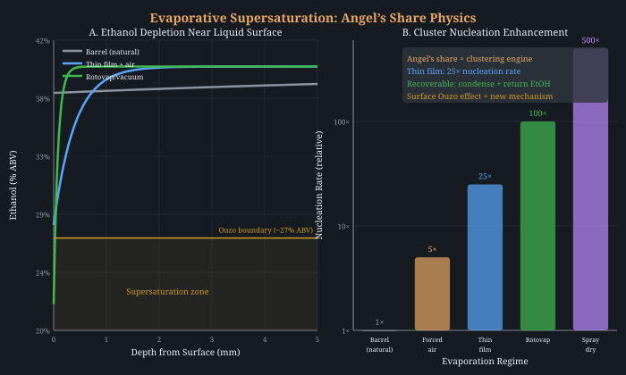
The chemistry beyond headspace DBD (§4.13). While §4.13 describes gas-phase plasma over spirit (RONS diffuse from headspace), plasma-activated ethanol (PAE) passes the discharge directly through the liquid via O2 microbubbles. Li et al. (2024) demonstrated that O2 bubble plasma in 10% ethanol generates three oxidant families simultaneously in just 5 minutes: H2O2 (130 ppm), peroxyacetic acid (166 ppm), and acetic acid (41 ppm)[136]. The PAA concentration alone is remarkable—this is 2.5× higher than H2O2 and forms via the direct reaction CH3CHO + H2O2 → CH3CO3H, meaning the plasma generates its own acetaldehyde precursor from ethanol and immediately converts it.
Why peroxyacetic acid matters for spirits. PAA is the industrial standard for lignin delignification in paper pulping—it selectively cleaves the β-O-4 ether bonds that constitute 45–60% of lignin’s interunit linkages. Oak lignin is primarily guaiacyl-syringyl type, rich in exactly these linkages. PAA treatment of oak should release vanillin, syringaldehyde, and ferulic acid derivatives—the same extractives that define barrel aging character—while preserving the cellulose backbone. This is mechanistically distinct from any other technique in the protocol: not thermal extraction, not enzymatic, not acid-catalyzed, but oxidative delignification of the wood surface itself.
Stability enables batch processing. Plasma-activated water (PAW) exhibits remarkable oxidant stability: H2O2 remains at 2–3 mg/L through 105 days at 4°C[137]. This means PAE can be prepared in a single 5-minute plasma treatment, stored refrigerated, and used over weeks. The practical implication: you do not need continuous plasma operation. One treatment session per batch of oak chips.
PAW for oak pretreatment. Paixão et al. (2024) demonstrated PAW treatment of oak alternatives for wine, finding that PAW-treated wood maintained wine color characteristics while avoiding the over-oxidation seen with stronger chemical treatments[138]. In the DBD plasma context, Niedzwiedz et al. (2022) showed only 2.85% phenolic loss in wine after short plasma treatments, compared to greater changes with traditional sulfite addition[139]—confirming that plasma-derived oxidants are gentler on desirable phenolic compounds than conventional alternatives.
Synergies with existing protocol steps:
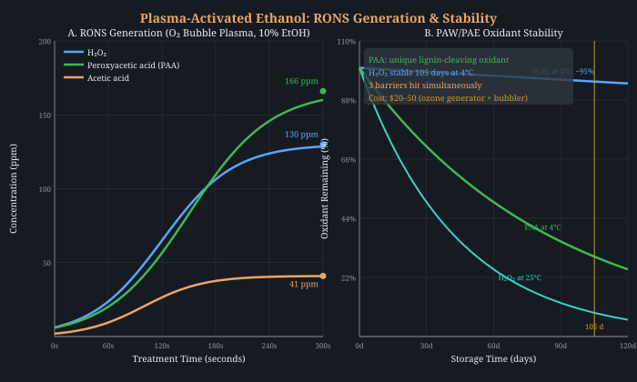
The microdroplet rate acceleration paradigm. The Zare laboratory at Stanford demonstrated that organic reactions in electrosprayed microdroplets proceed 103–106× faster than identical reactions in bulk solution[123]. Three mechanisms contribute: (1) surface charge concentration—the electric double layer at the droplet surface creates electric fields of ~107 V/cm that catalyze ion-pair reactions; (2) extreme surface-to-volume ratio—a 5 μm droplet has S/V = 1.2 × 106 m−1, vs ~10 m−1 for a 1-L beaker; (3) partial desolvation—rapid evaporation from the droplet surface strips the solvation shell from reactants, lowering activation barriers.
Three aging reactions accelerate simultaneously in each droplet:
Practical implementation: recirculating electrospray reactor. Spirit is pumped through a stainless steel capillary needle at 3–5 kV (ESI voltage) into a closed chamber. The electrosprayed mist (106–109 droplets per second at 1–10 μL/min) traverses a 5–10 cm flight path before impacting the liquid surface of the reservoir. The droplets merge back into the bulk, having undergone milliseconds of “aging” at 103× rate. A peristaltic pump recirculates the reservoir through the spray nozzle continuously.
Effective aging estimate: At 10 mL/min recirculation, 5 μm droplets, 10 ms flight time, and 103× rate enhancement: each milliliter experiences ~10 seconds of effective aging per pass. After 8 hours of recirculation (4.8 L processed from a 1 L reservoir, ~5 complete passes), the cumulative effective aging for clustering approaches ~1 year barrel-equivalent for the cluster nucleation mechanism (which has the strongest S/V dependence). Esterification is more modest (~8 days equivalent) since it depends on acid concentration rather than just surface effects. Oxidation is intermediate and cumulative—H2O2 accumulates in the reservoir at ~0.6 mg/hr, building a permanent oxidant pool.
Synergy with sonication (§3.14, §4.21): Ultrasonic nebulization generates microdroplets in a similar size range (5–50 μm) without requiring high voltage. A combined protocol: ultrasonic nebulization for safe, high-throughput microdroplet generation + electrostatic field to charge the droplets and prevent re-coalescence during flight. This is essentially an electrospray-assisted ultrasonic nebulizer—commercially available as medical inhalers (~$30–50).
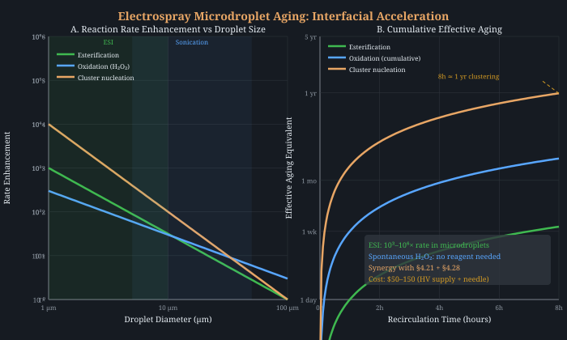
The four barriers are not independent. They are coupled in a cascade where each downstream process depends on upstream products:
| Step | Process | Feeds Into |
|---|---|---|
| Alcohols → aldehydes → acids | (acids are ester precursors) | |
| Acids + ethanol → esters | (esters are amphiphilic) | |
| Amphiphiles → ordered clusters | Sensory mellowness | |
| DMS/DMDS/DMTS removal | Removes masking of positive flavors |
This coupling means that an integrated protocol—attacking all four barriers in the correct sequence—could produce compound acceleration beyond what any single intervention achieves alone.
Ordering constraints: The protocol sequence is not arbitrary. Cu/AC must precede oak extraction (sulfur compounds inhibit phenol polymerization). Esterification must occur before dilution (equilibrium shifts unfavorably below 50% ABV). Laccase or riboflavin should follow peak phenol extraction but precede esterification (produces quinones that enhance color stability). Clustering must come last (dilution is irreversible for ester equilibrium).
| Week | Operation | Proof | Targets |
|---|---|---|---|
| 0 | Distillation through copper-packed column; Cu/AC cartridge post-treatment | 65% ABV | removal at source |
| 1–3 | Oak extraction via sono-electro-Fenton: charred American oak staves + oak biochar cathode (§4.11) in ultrasonic bath (40 kHz, 40 W/L, 3×30 min pulsed with 24h rest; §3.14). Electro-Fenton cell at 10 mA drives controlled oxidation; sonication triples H2O2 yield (§3.14). PDMS membrane O2 at kLa ≈ 5×10−6 (§4.7). Riboflavin (8 mg/L) + blue LED (§4.8) for ¹O2 phenol polymerization. Temperature cycle: 50°C/4h → 4°C/20h. | 65% ABV | Phenolic extraction + + selective ¹O&sub2; phenol polymerization |
| 3–4 | Remove wood, turn off LED and ultrasound. Optional: add laccase (§4.4) for quinone formation, 24–48h at 35°C, heat-kill at 70°C/15 min. Then recirculate through Amberlyst-15 + molecular sieve 3A (§1.12) packed-bed loop at 50°C. Sieve removes water, driving conversion past Keq limit to >95%. | 65% ABV | equilibrium acceleration (must precede dilution) |
| 4–5 | Dilute to 37% ABV using deionized water under turbulent mixing (FNP-style antisolvent step) | 37% ABV | nucleation via supersaturation |
| 5–7 | Freeze-thaw cycling: –15°C (12 hr) → 25°C (12 hr), 10–15 cycles. Optional: seed with 1–5% aged whiskey | 37% ABV | growth and annealing |
| 7–8 | Continue membrane O2; final proof adjustment; rest | 40–46% ABV | Oxidation cascade completion; equilibration |
Total elapsed time: 8 weeks. Conventional equivalent: 5–10 years in barrel.
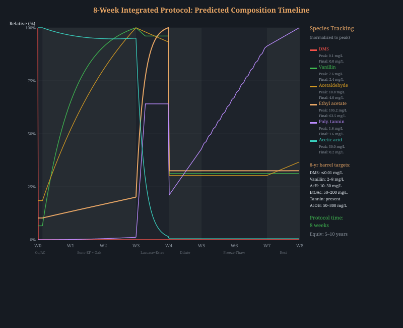
The following ranks the most impactful techniques by estimated time compression factor (how many times faster than barrel aging) and evidence quality.
| Technique | Time Compression | Evidence | Cost | Barrier |
|---|---|---|---|---|
| Amberlyst-15 catalysis (§1.1) | 24,000× | Published | $40 | ESTER |
| pH acidification to 3.0 (§1.10) | 80× | Published | $15 | ESTER |
| Mol sieve 3A water removal (§1.12) | N/A (breaks Keq) | Published | $20 | ESTER |
| Electro-Fenton (§4.10) | ~1,000× | Published | $30 | OXIDATION |
| Cu/AC sulfur removal (§2.1) | ~5,000× | Published | $15 | SULFUR |
| Temperature cycling (§4.5) | 10× | Published | $30 | OXIDATION |
| Ultrasonication (§3.14) | 250–700× | Published | $50 | CLUSTER |
| PDMS membrane O2 (§4.1) | 5–25× | Published | $25 | OXIDATION |
| Cold plasma DBD (§4.13) | Unknown | Novel | $30 | OXIDATION |
| Enzyme cascade reactor (§4.14) | ~100× | Novel | $40–80 | OXIDATION |
| Magnetic field + Fenton (§4.15) | 3× (multiplier) | Published | $10 | OXIDATION |
| Unified sono-electro cell (§4.12) | Combined | Novel | $105 | ALL |
| Dual-freq sonochemistry (§4.17) | 1.8× (multiplier) | Published | $80–150 | OXIDATION |
| Mol sieve + zeolite reactor (§4.18) | Breaks Keq | Published | $50–100 | ESTER |
| Pulsed electrolysis rAP (§4.19) | Selectivity control | Published | $30–80 | OXIDATION |
| LAB biocycle fermentation (§4.20) | 3 g/L ethyl lactate | Published | $20–40 | ESTER |
| Lipase in scCO2 (§1.14) | 100% (specific esters) | Published | $800+ | ESTER |
| Microdroplet ROS (§4.21) | +30% (hidden mechanism) | Novel | $0 | OXIDATION |
| DEP nanocluster assembly (§4.22) | 5–20× | Novel | $40–80 | CLUSTER |
| BDD anode (§4.23) | 3,000–10,000× | Published | $80–200 | OXIDATION |
| Sono-tannin condensation (§4.24) | +35–42% | Published | $50 | CLUSTER |
| Ionic strength engineering (§4.25) | Thermodynamic shift | Published | $5 | CLUSTER |
| CXL lipase (§1.15) | 40× (vs neat) | Published | $200–300 | ESTER |
| TiO2 photocatalysis (§4.26) | 36% vanillin selectivity | Published | $15 | OXIDATION |
| Plasma-activated ethanol (§4.27) | 166 ppm PAA in 5 min | Published | $20–50 | OXIDATION + ESTER + CLUSTER |
| Evaporative supersaturation (§4.28) | 25–100× | Novel | $0–30 | CLUSTER |
| Electrospray microdroplet (§4.29) | 103–106× | Novel | $50–150 | ESTER + OXIDATION + CLUSTER |
The Amberlyst and electro-Fenton compressions are not additive—they address different barriers. The protocol’s estimated 30–50× overall compression (8 weeks ≈ 5–10 years) accounts for the slowest barrier in each phase being the rate-limiting step. Cluster formation (§3) remains the least well-understood and likely the actual bottleneck.
Any accelerated aging protocol is only as credible as its analytical validation. The following measurements can objectively assess whether the protocol produces spirit equivalent to naturally aged whiskey:
| Measurement | Target | Method | Barrier Assessed |
|---|---|---|---|
| Ester profile | Match C2–C10 ethyl ester concentrations of 5–10 yr whiskey | GC-MS headspace SPME | |
| Volatile sulfur | DMS <25 ppb, DMDS <12 ppb, DMTS <0.01 ppb | GC-PFPD | |
| Small cluster population | SAXS intensity at q ≈ 0.8 nm–1 within 50% of 10-yr reference | SAXS (synchrotron or bench-top) | |
| Cluster size distribution | Population at 1–3 nm Rh | DLS | |
| H-bond strength | OH chemical shift comparable to aged reference | 1H NMR | |
| Oxidation state | Acetaldehyde/acetic acid ratio; total phenolics | GC-FID; Folin-Ciocalteu | |
| Sensory | Triangle test vs. aged reference; mellowness rating | Trained panel, n ≥ 12 | All |
Not all techniques require a research laboratory. The following ranks each approach by what a PhD-level chemist can achieve with a home lab, a pot still, and a ~$500 budget for specialty items.
| Technique | Home Score | Est. Cost | Simplest First Experiment |
|---|---|---|---|
| Barrier 1: Ester Equilibrium | |||
| Amberlyst-15 packed column (§1.1) | 4/5 | $40 | Pack chromatography column, recirculate 1L spirit at 50°C for 4h. FDA-cleared. |
| Reactive distillation (§1.2) | 4/5 | $0–50 | Load Amberlyst into reflux column packing section; run a normal spirit distillation. |
| Electrochemical Au (§1.4) | 3/5 | $200 | DC supply ($60) + gold wire ($80–150). Apply 0.8V for 20 min. Gold is E175 food-safe. |
| TiO2 + UVA (§1.5) | 3/5 | $50 | 5g TiO2 anatase (E171) in jar, UVA LED panel, 3–6h. Filter, taste vs. dark control. |
| Cu-clinoptilolite column (§1.7) | 4/5 | $25 | Soak clinoptilolite in CuSO4, calcine at 200°C, pack column. Dual-function (B1+B2). |
| EF oak extraction (§1.8) | 3/5 | $30–60 | Neon sign transformer + SS mesh electrodes in glass jar with oak chips. 500V AC across 5cm. Safety precautions. |
| pH acidification (§1.9) | 4/5 | $15 | Food-grade H3PO4 + pH meter. Drop to pH 3.0, sous vide 50°C, 2d. 80× ester acceleration. Neutralize afterward. |
| Mol. sieve 3A + Amberlyst (§1.12) | 5/5 | $20–50 | Food-grade 3A beads in mesh tube + Amberlyst column. Recirculate spirit at 50°C. Sieve removes water → 75% to 98% conversion. Regenerate in oven. |
| Gamma/EBI (§1.6) | 1/5 | N/A | Skip—or send sealed samples to food irradiation service ($100–300/batch). |
| Barrier 2: Sulfur Removal | |||
| Cu/AC cartridge (§2.1) | 5/5 | $15 | Cheapest & easiest experiment. Activated carbon + CuSO4 soak + oven dry. Column pass. Smell test. |
| Cu-clinoptilolite (§2.4) | 4/5 | $25 | Same column as 1.7. Simultaneous ester + sulfur treatment. |
| HKUST-1 MOF (§2.2) | 2/5 | $200 | Buy from Sigma. Research-only; not food-grade. |
| Barrier 3: Supramolecular Clustering | |||
| Proof optimization (§3.1) | 5/5 | $0 | Dilute to 37% ABV, rest 4 weeks vs. same-day dilution control. Costs nothing. |
| Two-phase aging | 5/5 | $30 | Extract at 65% ABV with oak chips + ultrasonic cleaner ($30) for 2 wk; dilute to 37%, rest 4 wk. |
| Seeded clustering (§3.4/3.8) | 4/5 | $20–100 | Add 2–4% vol well-aged whiskey to young extracted spirit at 37% ABV. Rest 4 weeks vs. unseeded control. |
| Freeze-thaw (§3.3) | 4/5 | $0 | 10 freeze-thaw cycles (–25°C, 24h each) in chest freezer. Modest effect at this temp. |
| Flash nanoprecipitation (§3.2) | 3/5 | $30 | Syringe-inject concentrated oak extract into water through plumbing T-fitting under turbulence. |
| DES oak extraction (§3.10) | 4/5 | $25 | ChCl + lactic acid. 2–10× more polyphenols than ethanol. Food-grade. Mix, heat, soak chips, dose. |
| scCO2 selective extraction (§3.11) | 2/5 | $800+ | Tabletop extractor, 150 bar/45°C, 5% EtOH. Extracts flavors, skips harsh tannins. High capital cost. |
| Enzymatic pretreatment (§3.12) | 4/5 | $25–40 | Homebrew cellulase on oak chips at 50°C/24h. Releases glycoside-bound aromas. Dry chips, add to spirit. |
| Multi-toast blending (§3.13) | 5/5 | $15 | Kitchen oven: separate batches at 165°C, 180°C, 200°C. Blend in spirit. Most immediately actionable. |
| Ultrasonic extraction (§3.14) | 4/5 | $35 | Jewelry cleaner (40 kHz). Spirit+oak in glass jar. 20–30 min sessions, 3–5/wk. 2–8× extraction. Synergistic with laccase. |
| Barrier 4: Oxidation Cascades | |||
| Silicone membrane MOX (§4.1) | 5/5 | $25 | PDMS tubing coil in jar + aquarium pump. Run 2–4 weeks. Dead simple. Use 5–8mm wall or intermittent exposure. |
| O2 rate tuning (§4.7) | 5/5 | $0 | Critical: tune PDMS wall thickness or exposure time to kLa ≈ 10−6 (5× barrel). Avoids acetaldehyde/tannin overshoot. |
| Electrochemical programming (§4.3) | 3/5 | $200 | Same gold electrode as 1.4. Step voltage: 0.50V → 0.68V → 0.80V, 4h each. |
| Immobilized laccase (§4.4) | 3/5 | $80 | Buy laccase (Sigma, T. versicolor), add to spirit with oak chips, 24–48h at RT. Filter. |
| Temperature cycling (§4.5) | 5/5 | $30 | Sous-vide 50°C 4h → freezer 4°C 20h. Daily cycle. 10× tannin condensation rate. Dead simple. |
| Maillard supplementation (§4.6) | 4/5 | $20 | Add xylose (0.3 g/L) + glycine (0.08 g/L) to spirit with oak. Temperature cycle. Accelerates furfural. |
| Riboflavin photosensitization (§4.8) | 5/5 | $5 | B2 vitamin tab (8 mg/L) + blue LED strip (450 nm). ¹O&sub2; has >106× phenol selectivity. Self-limiting. Use during oak extraction phase. |
| Fenton chemistry (§4.2) | 2/5 | $30 | Very thin margin for error. Overshoot → vinegar. Only for experienced hands. |
| Microwave extraction (§3.15) | 3/5 | $0 | Oak chips in spirit, sealed jar, 50% power 2–3 min × 3–5 cycles. 6–12 months equivalent extraction. Caution: ethanol vapors. |
| Electro-Fenton (§4.10) | 4/5 | $30 | Carbon felt cathode + graphite anode + bench PSU (5–10 mA). Spirit at pH 4 + trace FeSO4. Current controls OH• → AcH rate. 1:1 stoichiometry. |
| Oak biochar cathode (§4.11) | 3/5 | $50 | Pyrolyze oak chunks at 800°C+ (propane forge or kiln), use as electro-Fenton cathode with graphite anode. Triple function: H2O2 generation + DMS adsorption + oak extractive source. |
| Cold plasma DBD (§4.13) | 4/5 | $30 | Ozone generator ($20–30) modified for headspace treatment. Spirit + oak chips in sealed jar. 1–5 min treatment daily. No electrodes contact spirit. Electrode-free oxidation. |
| Enzyme cascade / Acetobacter (§4.14) | 3/5 | $40–80 | Unpasteurized vinegar mother (live K. europaeus) on ceramic carrier in packed column. O2 control via aquarium valve. Spirit flows through at controlled rate. Sub-vinegar acetic acid production. |
| Neodymium magnet + EF (§4.15) | 5/5 | $10 | N52 neodymium magnet ($5–15) placed on outside of electro-Fenton vessel. 3× OH• enhancement. Zero power, zero consumables, permanent. Cannot harm spirit. Free upgrade to any Fenton step. |
| Carbon dot amplification (§4.9) | 3/5 | $50 | Extract charred oak in spirit, ultrafilter (<10 kDa), concentrate filtrate, add to spirit + UV-A lamp. Verify by fluorescence. |
| Dual-freq ultrasonic bath (§4.17) | 4/5 | $80–150 | Buy 20/40 kHz dual-frequency bath (lab/jewelry). Drop-in replacement for single-freq bath in §3.14. 1.8× radical yield. Zero additional complexity. |
| Zeolite side-stream reactor (§4.18) | 3/5 | $50–100 | 3A mol sieve beads ($15) + H-BEA zeolite catalyst ($40–80). Dehydrate 50 mL side-stream, heat to 90°C, 8–12h, re-blend ester concentrate. Breaks the 58% conversion ceiling. |
| Pulsed electrolysis (§4.19) | 3/5 | $30–80 | 555-timer + MOSFET relay modulating existing EF power supply. 10–20 Hz pulse, 50–200 ms duty. Prevents AcH overshoot. Self-cleaning electrodes. |
| LAB biocycle fermentation (§4.20) | 3/5 | $20–40 | Kefir grains (LAB source) + baker’s yeast + sugar solution in separate vessel. Biocycle 3–5 days. Extract ethyl lactate. Dose into spirit. |
| DEP nanocluster assembly (§4.22) | 2/5 | $40–80 | Interdigitated electrode PCB (custom or repurposed) + function generator ($30 eBay). 100 kHz–1 MHz AC field. Verify via turbidity change (nephelometer or laser pointer + photodiode). |
| BDD anode electrolysis (§4.23) | 2/5 | $80–200 | BDD electrode from electrochemistry supplier + bench PSU. Higher upfront cost but 4× current efficiency and infinite lifetime vs carbon felt. Combine with 555-timer pulse circuit (§4.19). |
| Sono-tannin condensation (§4.24) | 4/5 | $50 | Ultrasonic cleaner + oak extract. 15 min at 40 kHz. Polymerization visible as turbidity increase and color deepening. Advanced: Folin-Ciocalteu phenolic assay ($15 kit) to quantify. |
| Ionic strength engineering (§4.25) | 5/5 | $5 | Potassium bitartrate (cream of tartar, $5/kg homebrew shop) at 0.5–2 g/L in spirit + oak extract. Compare turbidity vs unsalted control at 24/48/72 hr. Laser pointer + photodiode = $3 turbidimeter. |
| CXL lipase esterification (§1.15) | 3/5 | $200–300 | Stainless pressure vessel rated to 100 bar + CO2 cylinder + Novozym 435 beads. Charge with ethanol + oak chips + acid. Pressurize to 60 bar at 40°C for 2–4 hr. Requires pressure vessel safety knowledge. |
| TiO2 photocatalysis (§4.26) | 4/5 | $15 | Food-grade TiO2 powder (E171, $5/100g) + UV-A LED strip (365 nm, $10). Suspend 0.5 g/L in spirit + oak extract. Irradiate 30–60 min with stirring. Filter through 0.2 μm syringe filter. Smell test for vanillin. |
| Plasma-activated ethanol (§4.27) | 4/5 | $20–50 | Ozone generator ($20–30) + O2 feed + aquarium air stone bubbler. Run 5 min in 10% ethanol (diluted spirit). Soak oak chips 1–4h in PAE, then transfer to spirit. Compare extraction vs untreated chips at 2/4 wk. PAA delignifies surface without scorching. |
| Evaporative supersaturation (§4.28) | 5/5 | $0–30 | Spirit + oak extract in shallow tray (5 mm depth) + desk fan + loose plastic wrap on cold surface (condenser). 30 min evaporation, stir, repeat 10×/day. Ethanol-depleted surface crosses Ouzo boundary → cluster nucleation. Compare turbidity vs sealed control. Essentially free. |
| Electrospray microdroplet (§4.29) | 3/5 | $50–150 | HV bench PSU (3–5 kV) + SS blunt needle + glass jar + peristaltic pump. Spray spirit into closed chamber, collect in reservoir, recirculate 4–8h. Simpler: $25 ultrasonic mesh nebulizer. Compare turbidity + taste vs control after 8h treatment. |